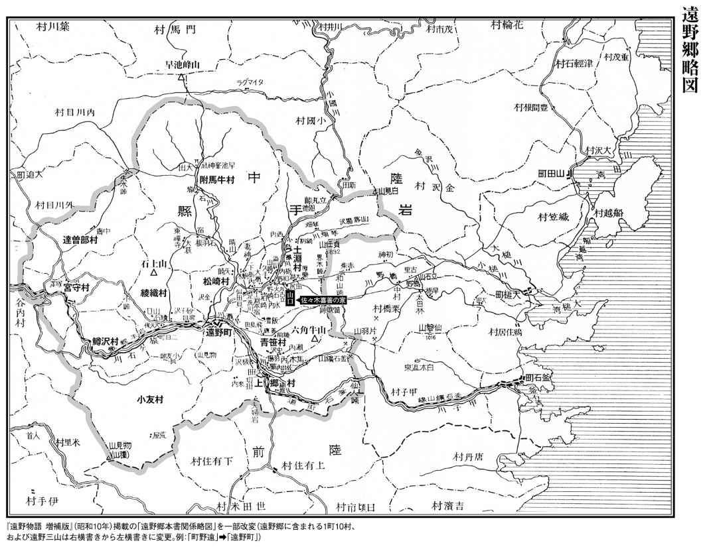

| ＮＨＫ「１００分ｄｅ名著」ブックス 柳田国男 遠野物語 | |
| 石井 正己 | |
| (2016) | |
ＮＨＫ100分de名著ブックス
遠野物語
柳田国男
石井正己
はじめに ── 古くて新しい物語の世界へ
東北地方の一角、遠野の山あいにある土 淵 村（現在の岩手県遠野市土淵町 ）で生まれ育った佐々木喜 善 （一八八六～一九三三 ）は、小説家になることを夢見て上京し、柳 田 国 男 （一八七五～一九六二 ）と知り合いました。
佐々木は故郷に伝わる神や妖怪の話、家々の伝承などの豊かな語り手でした。やがて独自の民俗学を切り拓いていくことになる柳田国男が、佐々木の語った不思議な話を聞いて、研ぎ澄まされた文章にまとめたもの── それが、明治四十三年（一九一〇 ）に初版が発刊された『遠野物語』です。
この作品には、山の神、里の神、家の神をはじめ、天狗、山男、山女、河童、幽霊、まぼろし、狼、熊、狐、鳥などの現れる短い話が、百十九話収められています。
岩手県の中央部に位置する遠野は、北上山地の中南部、周囲を山々に囲まれた盆地にあります。北に標高一九一七メートルの早 池 峰 山 、東に一二九三メートルの六 角 牛 山 、西に一〇三八メートルの石 上 山 という遠野三山に囲まれており、盆地底は標高二五〇メートルあまりですが、気候の厳しい寒冷地です。現在の遠野市は、約八二六平方キロメートルの面積の地域に、三万人弱の人々が暮らしています。
遠野というと、辺 陬 の地というイメージがあるかもしれません。しかし、江戸時代には遠野南部氏一万石の城下町として栄え、内陸と海を結ぶ交易の中継地として賑わいました。内陸の花巻と沿岸の釜石からは、それぞれおよそ四〇キロメートルの距離にあります。
『遠野物語』の序文には、「遠野の城下は則ち煙 花 の街なり」と書かれています。「煙花の街」とは華やかに賑わう街という意味ですから、明治の終わりになっても、一万石の城下町の余韻が残っていたのです。
改めて考えてみれば、『遠野物語』にあるような話が数多く残ったのは、遠野がたんに山深い場所だったからではなく、城下町の文化力が影響したからに違いありません。山村と城下町が間近にあるという環境だからこそ、古くて新しい話が伝わってきたのでしょう。
やがて、大正四年（一九一五 ）、花巻─仙人峠間に岩手軽便鉄道が開通し、さらに昭和二十五年（一九五〇 ）の釜石線全通によって、しだいに町から人と物の集散地としての機能は失われていきました。
岩手国体が開催された昭和四十五年（一九七〇 ）は、『遠野物語』の発刊からちょうど六十年目にあたり、その頃から遠野はこの物語を観光資源とした町づくりを進めて、「民話のふるさと」として知られるようになります。特に曲がり家 の囲 炉 裏 端 で語り部のお婆さんが昔話を語る様子は、テレビでも繰り返し放送され、遠野といえば昔話の土地というイメージがすっかり定着したように思われます。
しかし、『遠野物語』には、実はそうした観光の場には出てこない「負の遺産」とでもいうべき陰の部分があります。それは例えば、「子殺し」や「親殺し」といった、いささかおどろおどろしい事件なのですが、私はこういう「負の遺産」にも、人間のもつ普遍的な問題を考えるうえで、とても大きな価値があると思っています。
明治二十九年（一八九六 ）の三陸大津波の話もここには出てきますが、特に東日本大震災以降のいま、この国のあり方を考え、また家族や故郷といったものを考えていくひとつの大きな原点として、改めてこの作品を位置づけたいと思うのです。昔の人がいろいろと思い悩みながら生きてきた「負の遺産」を読み解くことによって、決して上っ面だけでは処理できない、人間の心の奥底にある問題を、より深く探ることができるのではないでしょうか。
『遠野物語』の初版刊行から、一世紀と少し経ちました。自然について、神様について、人間の生死について、あるいは社会のありようについて、かつての日本人が何を感じ、どのように考えて生きていたかを知ることは、たんに昔を懐かしむだけではなく、現代の私たちが未来の生き方を豊かに考えていくための、大切なよすがともなり得るはずです。

目次
古くて新しい物語の世界へ
民話の里・遠野
神とつながる者たち
生と死 魂の行方
自然との共生
世界の中の『遠野物語』
※本書における『遠野物語』など柳田作品の引用部分は『柳田國男全集』（筑摩書房）によります。他の著者の作品も含め、かな遣いは、読みやすさを考えて現代かな遣いに改め、適宜ふりがなを加えました。
※また本書には、現在の人権意識では不適切と思われる表現がありますが、歴史的な意味を考えて、そのまま用いたところがあります。
小盆地の宇宙
一 遠 野 郷 は今の陸中上 閉 伊 郡の西の半分、山々にて取囲まれたる平地なり。新 町 村 にては遠野、土 淵 、附 馬 牛 、松崎、青笹、上 郷 、小 友 、綾 織 、鱒 沢 、宮 守 、達 曽 部 の一町十ヶ村に分つ。（ ...... ）今日郡役所の在る遠野町は即ち一郷の町 場 にして、南 部 家 一万石の城下なり。（ ...... ）此 地へ行くには花 巻 の停車場にて汽車を下 り、北 上 川 を渡り、其 川の支流猿 ヶ 石 川 の渓 を伝 いて、東の方へ入 ること十三里、遠野の町に至る。山奥には珍らしき繁華の地なり。伝え言う、遠野郷の地大昔はすべて一円の湖水なりしに、其水猿ヶ石川と為りて人界に流れ出 でしより、自然に此 の如き邑 落 をなせしなりと。
『遠野物語』の本文は、このように遠野の地勢から始まります。
山々に取り囲まれた盆地がかつて湖だったという湖水神話は、実は日本各地にありますが、ここでは湖水が壊れた理由について、例えば他の神話にあるように、巨人の神様が山の端を蹴破って水が流れ出た、などとは語られていません。遠野の伝承では、村の創世が自然現象として語られていて、神話が断片化した形で存在しているのがわかります。
戦後の昭和三十三年（一九五八 ）、京都から二人の若い学者が遠野へとやってきました。社会学者の加藤秀俊（ ＊１ ） と、文化人類学者の米山俊直（ ＊２ ） の両氏です。『遠野物語』発刊から半世紀近くが経ち、二人の訪れた遠野の町には、すでに物語の世界を彷 彿 とさせる神秘性はありませんでした。映画館が建ち、オートバイが走り、喫茶店ではイヴ・モンタンのレコードがかかっていたそうです。
二人は土地の人への聞き取りや文献の調査を重ねて、昭和三十八年（一九六三 ）に『北上の文化── 新・遠野物語』という共著を上 梓 します。その後、加藤はメディアの研究に進みますが、米山はアフリカをはじめとする世界各地のフィールド調査を経て、『小盆地宇宙と日本文化』（一九八九 ）という本をまとめます。そしてそのなかで米山は、遠野は典型的な「小盆地宇宙」だといっています。
盆地底には人と物、情報が集散する城下町があり、周囲の平坦地には水田が広がり、山裾の丘陵地では畑や果樹園が営まれ、背後の山に入れば狩猟採集が行われています。地形と対応して、外側から中心へと、狩猟採集の縄文時代、稲作の弥生時代、商工業の発達した江戸時代の文化がそれぞれ息づいているのです。
さすがにいまは狩猟を生業 にしている人はいませんが、かつてはマタギやヤマダチと呼ばれた狩人が熊や鹿を獲っていました。春になれば山菜を採りに山に入り、秋になれば茸 を採りに山に入る暮らしは、いまでも続いています。
つまり、小盆地という空間に、縄文から近現代までの時間が凝縮されて堆 積 しているのです。『遠野物語』一話には「山奥には珍らしき繁華の地なり」とありますが、新しい都市文化を取り入れながらも、神話や伝説のなかに人類の原初的な思考が息づいてきたのには、このような「小盆地宇宙」としての歴史が深く関わっていると思います。
『遠野物語』の誕生
明治八年（一八七五 ）、柳田国男は兵庫県神東郡田原村辻川（現在の神崎郡福崎町西田原 ）に、医者兼漢学者の父の六男として生まれました。幼少の頃から非常に感受性が強く、神隠しに遭いそうになったり、不思議な幻視体験をしたりもしたようです。読書に耽 る一方、十代から短歌やロマン派的な新体詩（ ＊３ ） を発表し、文壇からも若き抒情詩人として注目されました。
東京帝国大学の法科に入ると農政学（ ＊４ ） を学び、卒業後は農商務省に入省します。同時に農政学者としても大学で講義をもち、また日本各地を回って産業組合についての講演をしました。
それから柳田は、法制局参事官、宮内書記官、内閣書記官記録課長、貴族院書記官長と、エリート官僚の道を歩んでいきます。そして四十代半ばで官僚生活に終止符を打つまで、いわゆる二足の草鞋 を履いて、勤務の傍ら全国各地を旅し、それまで日本にはなかった民間の学問としての民俗学を立ち上げていくことになるのです。
その後も国際連盟の委員や朝日新聞社の論説委員などを務めた後、日本民俗学の父として、調査と研究の巨大な業績を数多くの著作に残したことは、つとに知られている通りです。
明治四十一年（一九〇八 ）十一月四日のこと、当時三十三歳の柳田国男は、岩手県遠野出身の、佐々木喜善という二十二歳の若者と出会います。佐々木と同じ下宿にいた新進作家の水野葉 舟 （ ＊５ ） が、「珍しい男がいますよ」といって、柳田に妖怪の話を聞かせようと、東京の牛込区（現在の新宿区 ）市谷加賀町にあった柳田の家に佐々木を連れてきたのです。
その日の佐々木の日記には、「水野が来て、共 柳田さんの処 へ行った。お化話をして帰って」云々とあります。当時の文壇はいわば怪談ブームで、泉鏡 花 （ ＊６ ） をはじめさまざまな作家や文化人たちが怪談を語ったり、書いたりしていました。小説家の卵である佐々木自身もそんな流行のなかにいましたから、彼は自分のした話を「お化話」すなわち怪談という枠組みで認識していたのでしょう。
片や柳田の手帳には、「水野葉舟、佐々木喜善二人来て話 、佐々木は岩手県遠野の人、その山ざとはよほど趣味ある所なり。其 話をそのままかきとめて「遠野物語」をつくる」と書かれていました。柳田は佐々木と知り合ってすぐ書名まで考え、しかもそれを怪談ではなく、「遠野」という場所に伝わる興味深い「物語」として聞き書きし、その翌日からもう草稿の執筆に取りかかっています。
まだ民俗学という言葉さえなかったこの時代、柳田にはすでに地方文化への独特の視点がありました。この年の七月、九州旅行で宮崎県の山奥にある椎 葉 村 （ ＊７ ） を訪ねた柳田は、縄文時代の狩猟採集を彷彿とさせる猪狩りや焼き畑の習俗に驚き、翌明治四十二年（一九〇九 ）三月には、その作法を記録した『後 狩 詞 記 』五十部を自費出版することになります。柳田のなかでは、九州と東北の山村にそれぞれ生きている、途 轍 もなく古い文化を対照させようという構想が生まれたものと思われます。
つまり、話し手と聞き手のあいだには少なからず認識のずれが生じていました。しかし『遠野物語』はむしろそのことによって、既成の枠組みに収まらず、時代の文脈からも切り離された、それ以前にもその後にも類例のない、ある意味では孤高のテキストになっていったのだろうと思います。
柳田は明治四十二年初夏まで、佐々木からの聞き書きを熱心に重ねます。八月下旬には初めて遠野を訪ね、明治四十三年（一九一〇 ）五月にまず『石 神 問 答 』という本を出してから、翌六月、ついに『遠野物語』を発刊します。
『石神問答』は、「石神」「シャクジ」などと呼ばれた民間の神の淵源を探るために、江戸学者や東洋史学者、歴史学者、考古学者など、当時一流の学者たちから資料と意見を求めた往復書簡集です。遠野在住の人類学者である伊 能 嘉 矩 （ ＊８ ） や、佐々木喜善との書簡も登場します。
なぜ柳田はすでに草稿の出来ていた『遠野物語』よりひと月先に、急いでこの本を刊行したのでしょう。実は『遠野物語』本文の頭注には「石神問答一六八頁にも記事あり」などと度々記してあり、まず『石神問答』で民間信仰の神についての研究成果を明らかにしておいて、この本を脇に置いて参照しながら『遠野物語』を読んでほしかったことがわかります。『石神問答』の巻末には「近刊予告」があって、「此書は石神問答の著者が親しく遠野の人より聞きて筆録したる遠野郷の霊異記なり」などといった、柳田自身による『遠野物語』の広告文が載せられていました。
『遠野物語』初版は三百五十部限定の自費出版で、親類や知人の作家や研究者に贈った残りが販売されました。しかし、柳田の文学仲間でもあった島崎藤 村 （ ＊９ ） や田山花 袋 （ ＊10 ） は、旅人の趣味的な著作にすぎないと冷ややかに批判しました。ほかにも雑誌に書評や紹介が出ましたが、発刊当時の評価は芳 しくはなかったのです。
そうしたなかで高く評価したのは、わずかに二人だけでした。一人は、のちに小説「河童」などを書く、当時十八歳の芥川龍之介（ ＊11 ） です。彼は友人への手紙に「大へん面白く感じ候」と記し、それ以来、柳田の愛読者となります。もう一人は泉鏡花です。彼は柳田の筆力を大層ほめながらも、一方では、女性の叫び声などは山中ばかりでなく、都会でも聞こえると批判しました。
何しろ三百五十部限定の出版でしたから、多くの人が読めるような環境にはありませんでした。
「誠実なる人」と文体の仕掛け
此 話はすべて遠野の人佐々木鏡 石 君より聞きたり。昨明治四十二年の二月頃より始めて夜分折々訪ね来 り此話をせられしを筆記せしなり。鏡石君は話上手には非 ざれども誠実なる人なり。自分も亦 一字一句をも加減せず感じたるままを書きたり。（ ...... ）
『遠野物語』序文の冒頭です。「佐々木鏡石君」とあるのは佐々木喜善のことで、「鏡石」はペンネームです。泉鏡花の「鏡花」に対し、ちょっとへりくだってそのペンネームを真似たのだといわれています。「明治四十二年の二月頃より」とあって、すでに述べた事実と食い違っています。作為の真相は不明ですが、佐々木がこの年の正月に一度帰省して聞いた話が含まれるので、そうした経緯で聞き書きが中断したという印象を避けたかったのかもしれません。
佐々木喜善は明治十九年（一八八六 ）に遠野の土淵村の山口という集落で生まれ、祖父からは医者になれと言われますが、医者には向かず文芸の世界を志しました。東京に出て東洋大学の前身にあたる哲学館や早稲田大学で学び、上田敏 （ ＊12 ） などの評価を得ながら小説を書いて、北原白 秋 （ ＊13 ） や前田夕 暮 （ ＊14 ） といった文壇の若い仲間もできます。そのなかに少し年上の友人である水野葉舟がいたのです。
哲学館の設立者である井上円 了 （ ＊15 ） は、妖怪学という学問を講じていました。佐々木が哲学館に入学したのもその授業を聞くためでしたが、円了は基本的に、妖怪を近代の合理主義のなかで科学的に説明しようとした人ですから、佐々木は幻滅してしまいます。
そんな佐々木にとって、柳田国男は不可思議なことをそのまま認めてくれるところがあり、二人はお互いに共感できる関係だったのでしょう。柳田自身も、自分が神隠しに遭いやすい気質であることを認めていました。のちに展開する柳田のきわめて個性的な学問は、例えば神隠しや、大学生の頃に伊 良 湖 岬の海で見た椰 子 の実（ ＊16 ） といった、自分が身近で体験した小さな出来事から生まれました。それらを個人の体験にとどめてしまうのではなく、日本の歴史や人類の歴史を考えるきっかけにしたのは、最大の特色といえましょう。
その後、佐々木は病気になるなどして遠野に帰ります。小説家の道はあきらめて、『遠野物語』に出てくるザシキワラシやオシラサマ、昔話の採集や研究に打ち込んで、柳田の作ろうとした学問の有力な協力者となります。昭和八年（一九三三 ）に四十六歳の若さで亡くなるまで、彼は『江 刺 郡 昔話』『紫 波 郡 昔話』『老 媼 夜 譚 』『聴 耳 草 紙 』などの昔話集を刊行し、金 田 一 京助（ ＊17 ） に「日本のグリム（ ＊18 ） 」と呼ばれ、折 口 信夫 （ ＊19 ） をして「グリム以上だ」とまでいわしめる偉業を残します。
『遠野物語』の序文は「鏡石君は話上手には非ざれども誠実なる人なり。自分も亦...... 」とありますが、ここで柳田は、佐々木が噓をいう人ではなく、誠実な話し手であることを強調し、自分自身もまた誠実な書き手であるといいます。
そして、「一字一句をも加減せず感じたるままを書きたり」というのは、語られたままでもなければ、聞いたままでもないことを示します。強い感受性でもって、精魂込めた文章による作品を主体的にまとめたのです。ここから、名文と称されるような、研ぎ澄まされた文体は生み出されたのだといえましょう。
彼が選んだ文語体は、言文一致の口語体が主流になりつつあった当時の文壇からすれば、もはや流行遅れともいえる古めかしい雅文調でした。柳田自身は後に、佐々木喜善に口語体に書き直してみてはどうかと勧めていますが、それは挫折しました。やはり「感じたるまま」ということと、文語のもつ力というのは密接に関わっていると考えられます。
例えば「○○があった 」と過去のことをいうときに、文語では助動詞「き」「けり」を使って意味を書き分けることができます。「ありき」なら自分で本当にそれを見たということ、「ありけり」なら、自分で見たわけではないけれどそういうふうに伝えていたということです。また完了の「つ」「ぬ」や存続の「たり」「り」などの助動詞も使って、さらに精妙に書き分けることができます。そうした文語のもつ濃 やかな力が、『遠野物語』には非常によく表れています。
『源氏物語』や『竹取物語』（ ＊20 ） などの物語では「すぐれてときめき給うありけり 」「竹取の翁という者ありけり 」と、伝聞の「けり」を用いるのですが、『遠野物語』では「解きたる黒髪は又そのたけよりも長かりき 」「其日は風の烈しく吹く日なりき 」などと、「き」を使っています。これはまざまざと本当に見てきたことなのだとして、出来事の現場へと読者をダイレクトに引きずり込んでしまう文体の仕掛けであり、そんな工夫が文章の隅々にまで周到に施されているのです。
「平地人を戦慄せしめよ」
（ ...... ）国内の山村にして遠野より更に物深き所には又無数の山神山人の伝説あるべし。願わくは之 を語りて平地人を戦慄せしめよ。（ ...... ）
序文の第一段落の続きにある言葉です。ここで柳田国男は「山神山人」と「平地人」を対比します。日本の山奥には稲作民によって追いやられた狩猟民、つまり先住民である縄文時代の人々の子孫がいて、その人々は文字をもたなかったために歴史に残されてはいないけれども、言い伝えからでも歴史がわかると考えました。「伝説」が歴史資料になると考えていたのでしょう。当時の歴史学では大胆な考え方だったと思いますし、いまでも厳しく批判されることであって、学問としては挫折したといわれるところでもあります。
しかし、遠野盆地の日当たりのいい丘陵地には、至るところに縄文時代の遺跡が眠っています。また、佐々木喜善の暮らした土淵村の山口集落には、蝦夷伝説（ ＊21 ） があります。そして重要なのは、『遠野物語』とアイヌ（ ＊22 ） との関係です。『遠野物語』本文の頭注には、「遠野郷のトー はもとアイヌ 語の湖という語より出でたるなるべし」「ヤチ はアイヌ 語にて湿地の義なり 内地に多くある地名なり」等々、遠野の地名をアイヌ語起源によって説明する記述が頻繁に見られます。また、第２章で詳しくお話しするオシラサマについても、一四話に「アイヌ の中にも此神あること蝦夷風俗彙聞 に見ゆ」と頭注があり、『石神問答』巻末の「近刊予告」では、「オシラ様はアイヌの神なり」とまで言い切っています。
柳田は『遠野物語』の地名や信仰の基層にアイヌ文化の残存を見て、伝説中の山人をアイヌの祖先の末 裔 であると考えようとしていたことは明白です。『遠野物語』の根底には、アイヌがあり、蝦夷があり、そして縄文人があって、それらを含めてどのようにトータルに見ることができるかという、文化の多重性への視点が、明らかにありました。
しかし現在でも、アイヌと蝦夷との関係については諸説あり、柳田自身も、戦後に出版した『遠野物語』の文藝春秋選書版（一九四八 ）では、アイヌに関する頭注をすべて削除してしまいます。これはおそらく柳田が、その頃いわゆる「一 国 民俗学（ ＊23 ） 」に重点を置くようになっており、その理論に合わせた形で注を整理したのだろうと思います。
ともかく、「山神山人」に対比した「平地人」にこの話を読ませたかったのはたしかです。「平地人」とは具体的にいえば、まずは東京人だろうと思います。柳田には、文明開化が進んでいた日本のなかに、こういう異質な世界がいまも息づいているのだと、都会人に知らせたいという強い思いがあったのでしょう。
『後狩詞記』の九州にも、『遠野物語』の東北にも、知られざる生きた歴史が埋もれていることを明らかにして、「戦慄せしめ」ようとしたのでしょう。「戦慄」というのは激しい言葉ですが、最近の研究では、明治の終わり頃の作家たちの一種の流行語だったともいわれます。同時代の雰囲気を意識していたのでしょうが、それを「平地人」とつなげるところに、柳田の優れた独自性がありました。
「目前の出来事」「現在の事実」
「昨年八月の末自分は遠野郷に遊びたり」と始まる序文の第二段落（序文は全体が三つの大きな段落に分かれています）には、明治四十二年（一九〇九 ）、柳田が初めて遠野を訪れたときのことが出てきます。
彼は花巻で東北本線の汽車を降りて人力車に乗り、八月二十三日の夜に遠野に入るのですが、高 善 旅館という宿に泊まって、翌日は『石神問答』に登場した人類学者、伊能嘉矩と会います。その翌日には郊外の土淵へ行って佐々木喜善の家を訪ねますが、帰省していると思った佐々木は東京へ行っていて不在でした。
しかし序文にはこうした遠野の人々のことは一切書かれず、このときに見た風景ばかりが記されています。柳田は宿の主人から馬を借りて（いまならレンタカーやレンタサイクルでしょう）、郊外の村々を巡ります。馬上から見た稲の色合いの違いから早 稲 と晩稲 を判別するあたりは、農政学者の面目躍如たるところでしょう。
さらに、早池峰山の麓の附馬牛という村の「天神の山」（菅原神社）に行って獅子踊り（ ＊24 ） を見たり、盂 蘭 盆 （ ＊25 ） に新仏のある家で立てるムカイトロゲ（灯籠木）という紅白の旗に気づいたり、「道ちがえ」（追 分 ）の叢 に置かれた、雨 風 祭 の大きな男女の藁 人形を見つけたりもします。
女性や子供の声で賑やかな祭りの景色のなかでふと感じる旅愁や、夏の緑のなかに映える紅 い色といった映像的な描写は、視覚的にも聴覚的にもたいへん見事なものです。
柳田は実際に遠野へ行くことで、佐々木に聞いた話の基盤を眼前の光景から探ろうとしたのでしょう。しかし、神々はもちろん、妖怪や幽霊も登場しません。佐々木の語った話の世界はきわめて精神的なものであり、旅人がみた現実の遠野の風景との間には大きな落差があったのです。
にもかかわらず、序文の後半、第三段落で柳田はこう書きます。
（ ...... ）況 や我が九百年前の先輩今昔物語の如きは其 当時に在りて既に今は昔の話なりしに反し此 は是 目前の出来事なり。（ ...... ）近代の御 伽 百物語の徒 に至りては其志 や既に陋 且つ決して其談の妄 誕 に非 ざることを誓い得ず。（ ...... ）要するに此書は現在の事実なり。（ ...... ）
つまり、こういうことです。『今昔物語集』（ ＊26 ） は、それが成立した九百年ほど前の当時においても「昔の話」だったが、これはいままさに現在進行形の「目前の出来事」である。現代の御伽話や百物語の話し手に至っては志が低く、「妄誕」すなわち噓でたらめだが、この本に書いたことはまさに「現在の事実」なのである── 。
遠野の「目前の出来事」「現在の事実」をいうならば、先ほどの紀行の部分を挙げてもいいのに、佐々木の語った物語の世界こそが事実だというのです。そうした考えは、やがて人々の心意に重きを置く民俗学の価値観へとゆるやかにつながるわけですが、ここで柳田はまず、過去の説話や現代の怪談とは異なる、まったく新しい本が日本に生まれるということを高らかに宣言しています。
不可思議な内容も語られますが、その不可思議さをも含めて「事実」だということです。私たちはつい、これは噓か本当かという二分法で考えてしまいがちですが、たぶん『遠野物語』の世界では、その二分法は成り立ちません。生と死の境界すらも曖昧で、死者と話したり、死の世界との境界を越えて行ったり来たりできてしまう。そしてそれを否定せずに受け止める精神的な世界が、たったいま、たしかに存在するのだというリアリティーがあるのです。
ここにはおそらく自然主義（ ＊27 ） に代表される、同時代の文芸に対する批判がこめられています。田山花袋や島崎藤村の小説に描かれる世界は、日常の卑近な題材に囚われている。それよりもこの『遠野物語』にあるような、ごく普通の人々が語り継いできた世界のほうが、はるかにリアルであり、普遍性をもつのではないのか── という批判です。したがって、柳田国男の民俗学というのは、自然主義文学への批判を土台にして生まれてきたという面があると思います。
では、『遠野物語』で語られる「目前の出来事」「現在の事実」の例を、これから具体的に見ていくことにしましょう。
田植えを手伝う神様
一五 オクナイサマを祭れば幸 多し。土淵村大字柏 崎 の長者阿部氏、村にては田圃 の家 と云う。此家にて或年田 植 の人 手 足 らず、明 日 は空 も怪 しきに、僅 ばかりの田を植え残すことかなどつぶやきてありしに、ふと何 方 よりとも無く丈 低 き小 僧 一人来りて、おのれも手伝い申さんと言うに任 せて働 かせて置きしに、午 飯 時 に飯 を食わせんとて尋ねたれど見えず。やがて再び帰り来て終日、代 を搔 きよく働きて呉 れしかば、其日に植えはてたり。どこの人かは知らぬが、晩には来て物を食 いたまえと誘 いしが、日暮れて又其影 見えず。家に帰りて見れば、椽 側 に小さき泥 の足 跡 あまたありて、段々に坐敷に入り、オクナイサマの神 棚 の所に止 りてありしかば、さてはと思いて其扉 を開き見れば、神像の腰より下は田の泥 にまみれていませし由。
これは田植えを手伝ったオクナイサマという神様の話です。かつて田植えの労働はとても大変なものでしたから、おそらく「神の手も借りたい」という人々の思いがこうした話を語り継がせたのでしょう。神様が小僧の姿で手伝ってくれるというのは、科学的・合理的な精神からいえば考えにくい出来事です。しかしそれが本当にあったことだと保証されるのは、家のなかに小さな泥の足跡があり、オクナイサマの神像の腰から下が泥にまみれていたからです。この泥は、この話が「事実」であることを証明する証拠品なのです。
オクナイサマについてはこの話の前の一四話で、「部 落 には必ず一戸の旧家ありて、オクナイサマと云う神を祀 る。其家をば大 同 と云う。此神の像 は桑 の木を削 りて顔 を描 き、四角なる布 の真 中 に穴を明 け、之を上 より通して衣裳とす。正月の十五日には小 字 中 の人々この家に集り来りて之を祭る」と、オシラサマと並べて紹介しています。
この神様の像は、いまでもこの家で衣裳を着せられて大事に祀られていますから、これは「昔、ある所に...... 」という話ではなく、具体的な個人の家で実際にあった話として、証拠とともにそのリアリティーが支えられているのです。
実は田植えを手伝う神様の話は他にも日本中にたくさんあって、一般には地蔵の場合が多く、「田植え地蔵」と呼ばれています。古くは平安末期から鎌倉初期に成立した『古本説話集』に出てくる「田植え観音」の話にまで遡ることができます。この話では、それが旧家のオクナイサマに結びついているところに特色があります。学問的に見れば、古くからの説話のパターンがその地方の神様と出会って定着したということになるのでしょう。
現代の私たちのように、パソコンや携帯電話といった文明の利器に囲まれて暮らしていても、迷信と思われるようなことに、ふと心の不安を感じることがあるでしょう。人間には合理性だけでは済まされない、神秘的な心のありようがあるのだろうと思います。ですから、この物語を再発見し、読み解いていくことによって、私たち自身の心の奥底に埋もれているような、無意識の記憶に触れることができると考えているのです。
河童の子殺し
土淵の常堅寺の裏にある「カッパ淵」は、遠野にいくつかある河童淵の一つですが、写真で紹介される機会も多く、いまではよく知られた観光スポットとして定着しています。こうした場所には、「河童駒引（ ＊28 ） 」の伝説があります。
五八話で紹介されるのもそんな話で、新 屋 の家 という家の馬 曳 きの子が、ある日小 烏 瀬 川 の姥 子 淵 へ馬を冷やしに行くと、河童が馬を川へ引き込もうとして、逆に馬に引きずられて厩 の前に来たのを見つけられます。村人たちは河童に、今後は村中の馬に悪戯 をしないと約束させて殺さずに放したので、その河童は今は相沢の滝に住んでいるという話です。頭注にも「此話などは類型全国に充満せり」とあって、たしかによく似た話が日本各地にあり、遠野では語り部によって頻繁に語られる、ポピュラーな話の一つになっています。
それに対して、『遠野物語』には、そうした場では語られることのない河童の話があります。五五話は、「二代まで続けて河童の子を孕 みたる者あり。生れし子は斬 り刻 みて一 升 樽 に入れ、土中に埋 めたり」という怖い話です。夫のある女のもとに夜な夜な通ってくるのが河童だったという話なのですが、おそらく名家のスキャンダルの噂を消すために、「河童の子を殺した」という話型が利用されたのでしょう。「此家も如法の豪家にて○○○○○と云う士族なり。村会議員をしたることもあり」として、柳田は慎重に人名を伏せ字にしています。
さらに「河童の子を捨てた」という話が続きます。
五六 上郷村の何某の家にても河童らしき物の子を産みたることあり。確なる証 とては無けれど、身 内 真 赤 にして口大きく、まことにいやな子なりき。忌 わしければ棄てんとて之を携えて道ちがえに持ち行き、そこに置きて一間ばかりも離れたりしが、ふと思い直し、惜しきものなり、売りて見せ物にせば金になるべきにとて立帰りたるに、早取り隠されて見えざりきと云う。
この話で興味深いのは、村はずれの道ちがえ（追分）に子供を捨てた後、見世物にしようと思い直して取りに引き返すところです。村の習俗の世界に、江戸時代以降、都市の盛り場で広まった見世物の風俗が入り込み、河童の子を売ろうとしますが、すでに異界に隠されていたのです。ここには、何でも売って金にしようという、現代の日本人にもつながる経済優先の価値観がみられます。古い民俗の習慣が貨幣経済と出会って、人間の心がゆらぎはじめていることがわかります。ですからこれは、古さと新しさとが出会う『遠野物語』のあり方をよく示している話だともいえます。
要するにこの五五話と五六話は「子殺し」の話です。かつて前近代の日本では家を維持していくために、地域によって差はあるにせよ、間 引 きという習俗が行われていました。しかし当時の『岩手日報』という地元の新聞をみると、「嬰 児 殺し」の記事が取り上げられています。近代の法制度のもとでは、「子殺し」はすでに許されなくなっていたことがわかります。『遠野物語』のこの二つの話は、そんな前近代と近代の狭間に、かろうじて残された話だといえましょう。
「負の遺産」という問題
一方、『遠野物語』には「親殺し」の話も出てきます。
一一 此女と云うは母一人子一人の家なりしに、嫁 と姑 との仲悪 しくなり、嫁は屢 親里へ行きて帰り来ざることあり。其日は嫁は家に在りて打臥して居りしに、昼の頃になり突然と悴 の言うには、ガガはとても生 しては置かれぬ、今日 はきっと殺すべしとて、大なる草苅鎌を取り出し、ごしごしと磨 ぎ始めたり。（ ...... ）
この話では、息子が母親に殺意を抱いて実行に移すまでの緊張感が見事に記述されています。「ガガ は方言にて母ということなり」と頭注にありますが、殺人を宣言する緊迫した会話には、その土地の生活のなかで使われている言葉が出てきます。すでに述べたように、『遠野物語』は全国に通用する文語体で書かれていますが、こういう箇所は共通語には置き換えられなかったことがわかります。
母親は息子に許してくれと詫び、嫁も諫 めるのですが、息子は許そうとしません。息子は母親が逃げられないように戸口を閉ざし、「便所に行きたい」と母親が言うと、おまる（持ち運びできる便器）をもってきて、「ここにしろ」と命じます。
夕方になり、息子はついに、磨いだ鎌で母親の左の肩 口 を目がけて斬りつけます。囲炉裏の上には火 棚 というものがあって、そこで物を乾燥させるのですが、一度目はそこに引っ掛かってうまく斬れません。二度目は反対に右の肩から斬りつけ、母親の悲鳴を聞いてやってきた村人たちに取り押さえられ、息子は警察官に引き渡されます。
母親は滝のように流れる血のなかで、「自分は恨みも抱 かずに死ぬので、孫四郎は宥 してください」と言い、「之を聞きて心を動 かさぬ者は無かりき」と続きます。そしてその後、息子の孫四郎は、いまでいう精神鑑定で、病気のために起こした犯罪であると診断されて放免され、「家に帰り、今も生きて里に在り」と書かれて、この話は終わります。
現代では考えにくいことですが、こういう事件を起こした人間がそのまま村人の一人として生活していたのです。村の人々は皆この事件を知っていますし、これを語った佐々木喜善はこの人を見知っていたはずです。かつての共同体では、ある家で起こった悲惨な事件を内側に抱え込みながら暮らしてきたことが、この話からはよくわかります。
母親と嫁の対立に息子が悩むというのは、いまではもう古典的な話題になってしまいましたが、家族が抱えている深い闇の部分というのは、百年経っても変わっていません。むしろ新聞やテレビのニュースを見れば、現代のほうがより閉鎖的になって、問題はさらに深刻化していると感じられることさえあります。ですからこうした人間の危うさを含めて、この作品の「負の遺産」ともいえる普遍性を考えてみることは、大きな意味があると思うのです。
ところで、この話には「孫四郎」という名前まで出てきますので、地縁・血縁の強い地元の人が読めば、どこの家の事件か特定できたはずです。五五話の河童の子殺しの話では「○○○○○と云う士族」となっていましたが、これは草稿から清書、初校まで実名になっていたのを、再校の段階で伏せ字にしたものです。しかし、五五話のような例はまれで、『遠野物語』では、その話が本当にあった「現在の事実」であることを保証するために、地名・人名をはじめとする固有名詞が丁寧に書かれています。なかにはスキャンダルもありますから、いまならとても書けないような個人情報といえましょう。
『遠野物語』の初版刊行の直後、柳田は佐々木喜善への葉書に、「人名などは斟 酌 すること能 わざりし故 わざと遠野の人には一冊もおくり不申 」と書いています。遠野の人には『遠野物語』を読まれたくなかったのです。それは、こうした個人情報を克明に書いてしまったためではないかと推測されます。
ところが佐々木のほうは『遠野物語』を手にして喜び、「我が村の人達ともなりかわりて御礼申上候 此の書にて浮世にはじめて遠野という処ありて そして土淵村と言う処ありて 狩人の某があるよしまで世に出で候」と柳田に手紙を書きます。たしかに遠野が有名になったのは、『遠野物語』によることは間違いありません。
できあがった『遠野物語』について、書き手と話し手の感覚には相当な差異があったことがわかります。それぞれの立場がこの作品の本質と深く関わる認識であり、それは現代にまで影響していると考えられます。
『遠野物語』の普遍性
昭和八年（一九三三 ）、遠野では遠野町郷土座談会と遠野物語朗読会を組織して、手に入らない初版本を町の所蔵者から借り、謄写版の『遠野物語』を印刷しています。当時の町長はその序文で、「遠野地方の物語りを蒐 めた名著である」と述べています。他ならぬ地元で「名著」という評価を下したのです。
このとき、佐々木喜善は仙台に出ていましたが、まだ存命中でした。しかし、日記を見ても、こうした動きは記されていません。すでに書き手や話し手の手を離れて、『遠野物語』は一人歩きを始めていたに違いありません。佐々木はこの年の九月に亡くなります。
二年後の昭和十年（一九三五 ）に、柳田国男の還暦を記念して『遠野物語 増補版』が出版されます。それは柳田への祝福であると同時に、佐々木の三回忌に捧げる鎮魂の書でもありました。
ここには初版の百十九話に加えて、二百九十九話を収めた「遠野物語拾遺」が載せられています。これは佐々木の集めた資料を元に、半分を柳田自身が、残りの半分は折口信夫の弟子である鈴木脩 一 （ ＊29 ） （後に棠 三 の筆名で言語伝承を研究）が書き起こしたものです。仕掛人は、この増補版の「後記」を書いた折口信夫だと考えて間違いないでしょう。
この増補版刊行によって、『遠野物語』は日本民俗学の誕生を告げた記念碑として位置づけられていきます。このとき、東京の日本青年館で日本民俗学講習会が催され、全国から集まった同志により民間伝承の会（後の日本民俗学会）が組織されます。こうして柳田国男はカリスマ的扱いを受けるようになり、『遠野物語』は「名著」として祭り上げられてゆきます。しかし、「先生のお書きになったもの」に批判はしにくいとして、民俗学の研究史のなかに囲い込まれてしまったように感じられます。
作品の内実が民俗学の外側から、ようやく正当に評価され始めるのは、昭和三十七年（一九六二 ）に柳田の亡くなる前後あたりからで、例えば吉本隆明（ ＊30 ） や三島由紀夫（ ＊31 ） などの思想家や作家たちが、その思想的・文学的価値を高く評価し直すようになります。
一方、地元では、『遠野物語』には文明化が後れた東北地方の貧しさや後進性が書かれていると感じて嫌がり、「負の遺産」としてあまり世に出したくないと思う人たちがいたことも事実です。たしかに、その気持ちもわからなくはありませんが、この作品には日本人はもちろん、人類が歩んできた精神史を考えることができる普遍的な価値があると思います。
現在は、民俗学でも文化人類学でも、個人情報を保護する目的で、例えば「Ａ村のＢ家」などと抽象化して書くのが一般的です。それは確かに大切な配慮ですが、それでは学問に利用されるだけで終わってしまい、学問の成果を社会に還元して、未来に役立てるための道筋を失ってしまいます。柳田は「世の中を幸せにしない学問は意味がない」と言いましたが、まったくその通りでしょう。
私はもう二十年以上にわたって、ひたすら『遠野物語』を読んできましたが、この間に遠野でも地縁・血縁の絆が薄れ、さらに過疎化が進み、もはや追跡調査は困難になっています。観光のための商品化を図るのではなく、この作品のもつ普遍的なメッセージを読み直し、現代社会が抱える課題と向き合う手立てを考えなければならないと思います。
『遠野物語』の世界は、一世紀前の東北地方にこんな懐かしい日本があったというのではなく、現代の私たちにダイレクトに迫ってくるような、やむにやまれぬ人生のドラマを書き留めています。「願わくは之を語りて平地人を戦慄せしめよ」という序文の強烈なメッセージが、決して過去のものでない理由は、そんなところにあるように思います。柳田が想定した「戦慄」せしめたい「平地人」とは、まさにいまこの作品を読む私たち現代人のことでもあるからです。
＊１ 加藤秀俊
一九三〇～。社会学者（コミュニケーション論・大衆文化論・文明論）。元学習院大学教授。著書『中間文化』『整理学』『独学のすすめ』『日本人の周辺』等。
＊２ 米山俊直
一九三〇～二〇〇六。昭和・平成期の文化人類学者。京都大学名誉教授。著書『日本のむら百年』『都市と祭りの人類学』『アフリカ農耕民の世界観』等。
＊３ 新体詩
明治期の文語定型詩。七五調分かち書きを主とする。西洋詩にならい、詩形・内容とも旧来の漢詩・和歌にかわる「新体の詩」の作出を目指した。『新体詩抄』（一八八二）に始まり、島崎藤村・土井晩翠らにより芸術的に高められた。
＊４ 農政学
農業に関する政策・法令等を研究する学問。農業政策学。柳田は晩年、子供時代の飢饉の体験が「私をこの学問にかり立て、かつ農商務省に入らせる動機にもなった」と回想している（『故郷七十年』）。
＊５ 水野葉舟
一八八三～一九四七。明治から昭和前期の文学者。「明星」の歌人として出発、小品文・自然主義小説へと進む。小品集『葉舟小品』『草と人』、短編集『微温』等。
＊６ 泉鏡花
一八七三～一九三九。明治から昭和期の小説家。尾崎紅葉門下。自然主義の時代にあって浪漫的・耽美的な「虚構の美」を追求し続けた。『高野聖』『婦系図』『歌行燈』等。
＊７ 椎葉村
宮崎県東臼杵郡の西部、九州山地の只中にある村。平家の残党をここに追い詰めた那須与一の伝説から、柳田来訪の頃は「奈須」（那須）と通称した。『後狩詞記』の副題は「日向国奈須の山村に於て今も行わるる猪狩の故実」である。
＊８ 伊能嘉矩
一八六七～一九二五。遠野生まれの人類学者。東京で人類学を修め、台湾研究のため一八九五～一九〇八年の大半を同地で過ごして帰郷。柳田は初めて遠野を訪れた折に伊能と会い、伊能から『遠野旧事記』等の文献を教えられた。
＊９ 島崎藤村
一八七二～一九四三。明治から昭和期の文豪。詩集『若菜集』、小説『破戒』『夜明け前』等。藤村が同人の文芸誌「文學界」（一八九三創刊）に、柳田も九五年から廃刊（九八）まで、新体詩などを発表していた。
＊10 田山花袋
一八七一～一九三〇。明治・大正期の小説家。『蒲団』『田舎教師』等。花袋が通っていた牛込の歌塾に一八九一年、十六歳の柳田が入門してきたのが、終生の交遊の始まり。
＊11 芥川龍之介
一八九二～一九二七。大正期の小説家。作品「羅生門」「鼻」「蜘蛛の糸」等。一貫して柳田を愛読。「河童」（一九二七）は『遠野物語』『山島民譚集』に触発されて書いた小説で、作中に柳田の名も出てくる。
＊12 上田敏
一八七四～一九一六。明治期の翻訳家・詩人。ボードレール、ブラウニングなど西欧近代詩人の訳詩集『海潮音』（一九〇五）は、日本の近代詩に深甚な影響を及ぼした。
＊13 北原白秋
一八八五～一九四二。明治から昭和前期の詩人・歌人。詩集『邪宗門』『思ひ出』、歌集『桐の花』。歌曲・童謡作詞「からたちの花」「この道」「ペチカ」（作曲・山田耕筰）等。
＊14 前田夕暮
一八八三～一九五一。明治から昭和期の歌人。歌集『収穫』（一九一〇）で清新な自然主義の歌人として出発、若山牧水と並び称された。のち一時、口語自由律短歌も提唱。
＊15 井上円了
一八五八～一九一九。明治期の哲学者。西欧哲学によって仏教の哲学的基礎を追究するなど、宗教哲学の面から仏教の啓蒙に努めた。著書『仏教活論』『妖怪学講義』等。
＊16 椰子の実
一八九八年、渥美半島（愛知県）突端の伊良湖岬に遊んだ柳田は、浜辺に漂着している椰子の実を発見。その話を柳田から聞いた島崎藤村が作った詩が、有名な「椰子の実」（名も知らぬ遠き島より...... ）である。
＊17 金田一京助
一八八二～一九七一。大正・昭和期の言語学者。アイヌ語研究を志し、アイヌの知 里 幸恵らの協力のもと、ユーカラ（詞曲。歌われる叙事詩）等の筆録・収集に努めた。
＊18 グリム
「赤ずきん」「白雪姫」など有名なドイツ童話（メルヘン）を収めた『グリム童話』の収集者・編纂者、ヤーコプ（一七八五～一八六三）とヴィルヘルム（一七八六～一八五九）の「グリム兄弟」のこと。
＊19 折口信夫
一八八七～一九五三。大正・昭和期の国文学者・民俗学者。歌人としては釈 迢 空 と号す。民間伝承・芸能の採集を踏まえた古代研究・芸能史研究を行う。著書『古代研究』、歌集『海やまのあひだ』、詩集『古代感愛集』、小説『死者の書』。
＊20 『源氏物語』『竹取物語』
どちらも平安時代に成立した「作り物語」（事実に基づかない架空の物語）。『竹取』は平安初期の成立で、現存最古の作り物語。『源氏』は平安中期、十一世紀初頭の成立。
＊21 蝦夷伝説
集落に近接する蓮台野には、「蝦 夷 屋敷」と呼ばれる四角い凹みがたくさんあり、縄文時代の「蝦 夷 銭 」（銭の形をした土器）等が出土した。この縄文遺跡を遠野の人々は、蝦夷（古代律令制国家の東北日本の民に対する呼び名）の住居跡と考えて「蝦夷」の名を冠し、祟りを怖れて掘り返しはタブーとなった。『遠野物語』当時にも、そのような場所が二か所あったという（一一二話）。
＊22 アイヌ
主として北海道に居住する日本列島の先住民族。古くは本州北部にも居住したが、十三世紀以降、和人の北上に伴い北海道に追われ、以後近世・近現代を通じて和人・日本政府の支配と収奪のもとにあった。日本政府がアイヌ民族を先住民族と認定したのは二〇〇八年。
＊23 一国民俗学
一九三〇年代前半に柳田が提唱した「研究の対象を日本という一国の民間伝承に限定した民俗学」のこと。「一国」の範囲は、東北地方から九州・琉球まで。北海道が除かれたのは、アイヌ語は日本語とは別言語という理由からだった。
＊24 獅子踊り
岩手・宮城両県に分布する風流系統の獅子舞。鹿踊りとも書く。角の付いた面（鹿頭）をかぶった男と、剣をもった童子たちが、歌と囃子（笛・鼓）に合わせて舞う。
＊25 盂蘭盆
旧暦七月十五日に行う父母・先祖供養をいう。盂蘭盆は梵語で「はなはだしい苦」の意で、餓鬼道に落ちて苦しんでいる母を子が孝順によって救った仏教説話に基づく。
＊26 『今昔物語集』
天竺（インド）・震旦（中国）・本朝（日本）の話からなる説話集。全三十一巻。編者未詳、平安末期成立か。書名は一千余話がすべて「今は昔」で始まるところから。
＊27 自然主義
写実主義を徹底し、〈美醜や善悪をこえた自然〉として人間を客観的に描こうとする文芸思潮。島崎藤村・田山花袋・徳田秋声・岩野泡鳴・正宗白鳥らが輩出して、明治末期の日本文学の主流となった。
＊28 河童駒引
河童が水辺にいる馬を水中に引き入れようとする類の話。河童の行いは失敗して人間に捕らえられ、今後迷惑はかけないと約束し、霊薬の製法を教えたり、魚を提供したりして許される。猿が駒引する例も多い。
＊29 鈴木脩一（棠三）
一九一一～九二。昭和期の国文学者。国学院大学・郷土研究会で折口信夫に師事、一方柳田に親 炙 。著書『対馬の神道』『ことば遊び』『醒睡笑研究ノート』『説話民謡考』等。
＊30 吉本隆明
一九二四～二〇一二。一貫して原理的課題を追究した思想家。著書『共同幻想論』『心的現象論序説』等。「かれ（柳田）の無方法の方法は、在来ありきたりの方法的な成果を、方法的 に制覇しうるほどの業績をあげている」（『定本柳田国男集月報』21 「無方法の方法」）。
＊31 三島由紀夫
一九二五～七〇。戦後の小説家・劇作家。小説『潮騒』『金閣寺』、戯曲『近代能楽集』等。「これ以上はないほど簡潔に、真実の刃物が無造作に抜き身で置かれている」（「柳田国男「遠野物語」── 名著再発見」）。
神々の世界
かつて日本では山にも川にも、里にも家にも、至るところに神様の存在を感じながら、人々は暮らしていました。神様はどこか遠くではなく、生活のごく身近なところに存在していたのです。台所や便所などにも神様がいると信じ、一年の行事の中に神を祀る日を決めていたことは、生活を律する規範になってきたように思います。
神道（ ＊１ ） や仏教、あるいはキリスト教やイスラム教といった大宗教が力をもつ以前には、自然を崇拝する、原始的な信仰が世界各地にありました。『遠野物語』は、大きな価値観の転換期にさしかかりながらも、そんな神々が生活習慣のなかに生き生きと残っている姿を伝えているといえます。
この本では、序文のあとに「題目」がありますが、それは順番に頁 数を記した目次ではなく、「地勢」から「歌謡」までの四十項目の分類の下に、対応する話の番号が記されています。話に番号を付けて数量化したことが、こうしたところに生かされていることに気がつきます。
題目では、神々は「里の神」「家の神」「山の神」に分類されています。「里の神」はさらに「カクラサマ」「ゴンゲサマ」、「家の神」はさらに「オクナイサマ」「オシラサマ」「ザシキワラシ」に下位分類されています。柳田国男が『遠野物語』で扱った神々は、日本で神道が組織的に確立する以前の、古い民間信仰の神様でした。
まずは遠野のはじまりにかかわる神様からみていきましょう。二話で語られるのは、題目では「神の始」に分類されている話です。
二 （ ...... ）大昔に女神あり、三人の娘を伴いて此高原に来り、今の来 内 村の伊豆権現の社ある処に宿りし夜、今夜よき夢を見たらん娘によき山を与うべしと母の神の語りて寝たりしに、夜深く天より霊華降 りて姉の姫の胸の上に止りしを、末の姫眼覚 めて窃 に之を取り、我 胸の上に載せたりしかば、終 に最も美しき早地 峰の山を得、姉たちは六角牛と石神とを得たり。若き三人の女神各 三の山に住し今も之を領したまう故に、遠野の女どもは其妬 を畏 れて今も此山には遊ばずと云えり。
これは遠野盆地を囲む山々のうち、遠野三山と呼ばれる早池峰山、六角牛山、石上（石神）山に三人の女神が鎮座した由来です。長女と次女はそれぞれ六角牛と石上だという説と、石上と六角牛だという説の両方があり、『遠野物語』ではそこが曖昧ですが、いずれにせよ三女は最高峰の早池峰の神になります。昔話には末子が成功するという話のパターンがあって、この話もそうなっています。
それが末尾で女人禁制の由来に結びつきます。繰り返される「今も」という表現が重要で、「大昔」に起こったことが「現在の事実」を保証する論理を作り出します。実際、これらの山は戦前まで女性の立ち入りが許されませんでした。その禁制の厳重さを示すために、一人の巫 女 が「自分は神に仕える者だから差し支えがない」といって、牛に乗って石上（石神）山に登ると、暴風雨に吹き飛ばされて、姥 石 と牛石になったと伝える話があります（拾遺一二話 ）。
それとは対照的に、男性にとって遠野三山は、「お山がけ」といって、一人前になるための成人儀礼として必ず登らなければならない山でした。戦後、男女平等の民主主義社会になると女人禁制は崩れて、女性でも登れるようになりました。それ自体はもちろんいいことですが、同時に男性の成人儀礼もなくなります。崇高な信仰対象としてあがめてきた山との強い緊張関係は、急速に失われていったのです。
「山の神」の両義性
二話では遠野三山に女神が鎮座しましたが、題目にある「山の神」は、『遠野物語』では合わせて七話、「遠野物語拾遺」では四話挙げられており、美しい女神とは程遠い恐ろしい姿をしています。『山の人生』（ ＊２ ） （一九二六 ）で柳田が書いているように、「山の神」は女房のことを指す言葉でもあり、女性とされることが多いのですが、遠野の里の人にとっての山の神は男性の姿で現れることが多く、背が高く、顔が赤く、眼がギラギラ輝いているという特徴があります。おそらくここには伝説の山人である「山男」の姿が投影されているのでしょう。
一方、山に暮らした狩人たちが考える山の神は異様です。例えば、早池峰山の主は三つの顔があって一本足の三面大黒だったり（拾遺一二六話 ）、貞 任 山 では一つ眼一本足だったり（拾遺九六話 ）して、ともに「怪物」と呼ばれています。
区分けしてみると、どうやら稲作をする里の人たちがイメージする弥生的な山の神と、狩猟採集をする狩人たちがイメージする縄文的な山の神という、質の違う山の神があるようです。
里の人にとって山の神は出産の神でもありました。「妊婦が産気づいても、山の神が来ないと子供が産まれない」といって、馬に荷 鞍 を着けて迎えに行きます。馬が身震いしたら山の神が乗ったというので、連れて戻ると同時に子供が産まれるそうです。馬がいない家ではオビタナというおんぶ紐 をもって山の神を迎えに行きました（拾遺二三七話・二三八話 ）。
山の神というのは、恐ろしいばかりでなく、豊かさに結びつくような、両義的な神様だったのだと思います。出産を司る場合もあれば、下手をすると祟られて命を取られてしまうこともあります。
九一話は、元は南部男爵家（ ＊３ ） の鷹 匠 （ ＊４ ） で、遠野の町で鳥 御 前 という綽名 で呼ばれていた人の話です。連れの男と茸 採 りに出かけて、綾織村の続 石 という珍しい岩があるところから少し上の山に入り、一人でさらに山を登ると、赤い顔の男と女が話をしているのに出逢います。近づく鳥御前を彼らは手振りで制止しますが、構わず進むと女は男の胸に縋 るようにするので、本物の人間ではないだろうと思い、ふざけてやろうと腰の切 刃 を抜き、打ちかかるふりをします。そのとき赤い顔の男が自分を蹴ったかと思うと、鳥御前はたちまち前後不覚に陥ります。連れの男が、谷底で気絶していた鳥御前を見つけ、介抱して連れ帰ります。鳥御前は連れの男に一部始終を話し、「誰にも言うな」といってから、三日程の間病んで亡くなりました。家族が死に方を不思議に思い、ケンコウ院（正しくは花厳院）という山伏に相談したところ、「山の神たちの遊べる所を邪魔したる故、その祟 をうけて死したるなり」といいます。
「此人は伊能先生なども知合なりき。今より十余年前の事なり」とこの話は終わりますが、「伊能先生」というのは第１章で出てきた人類学者の伊能嘉矩で、鳥御前は、伊能の家の向かいに住んでいた沖館勝志という人物だとわかっています。
山の神の祟りは大変な恐怖でした。ある特定の日や時間、あるいは特定の場所に山の神が出やすいとされ、それには特に気をつけなければならないという畏敬の気持ちを人々はもっていました。以下に引く一〇二話には、そんな気持ちがよく現れています。
一〇二 正月十五日の晩を小正月と云う。宵 の程は子供等福の神と称して四五人群 を作り、袋を持ちて人の家に行き、明 の方から福の神が舞込んだと唱えて餅を貰 う習慣あり。宵を過ぐれば此晩に限り人々決して戸の外に出ずることなし。小正月の夜半過ぎは山の神出でて遊ぶと言い伝えてあれば也。山口の字丸 古 立 におまさと云う今三十五六の女、まだ十二三の年のことなり。如 何 なるわけにてか唯一人にて福の神に出で、処々をあるきて遅くなり、淋しき路を帰りしに、向 の方より丈の高き男来てすれちがいたり。顔はすてきに赤く眼はかがやけり。袋を捨てて遁 げ帰り大に煩 いたりと云えり。
遠野の町から佐々木喜善の家のある土淵の山口へ行く途中、柏崎という集落の近くには、愛宕 山 という小高い山があって、いまもその山の裾野には、「山神」という文字が刻まれた石塔があります。八九話の頭注に「曽 て山神に逢い又は山神の祟を受けたる場所にて神をなだむる為に建てたる石なり」と説明されています。八九話は、その愛宕山から下りてきた赤い顔をして眼のギラギラした男が山の神だとわかって、村に逃げ帰った若者の話です。
九八話には、「路の傍に山の神、田の神、塞 の神の名を彫りたる石を立つるは常のことなり」とあります。後に柳田国男は、春に山の神が里へ下りて田の神になり、秋には田の神が里を離れて山の神になるという循環モデルを提示します。『遠野物語』にはそうしたモデルは当てはまりませんが、ここで紹介した山の神のエピソードからは、狩猟民と稲作民が複合する日本文化の構造が、縮図として見えてくるように思います。
ザシキワラシと家の盛衰
『遠野物語』には、河童や天狗のように、江戸時代から地方のみならず中央でも知られた妖怪がいますが、ザシキワラシ、オシラサマ、オクナイサマ、ゴンゲサマ、カクラサマといった神々は、それまでほとんど知られることがありませんでした。「神」といっても、神道の体系のなかにある神ではありません。
それは文明化された合理的な精神からみると、迷信だとか後れているとかいう話になるわけですが、一方では現代でも、どこまで神を意識しているかはともかく、信仰は生きています。私はマンションに住んでいますが、毎年正月になれば、玄関に注 連 飾 りを下げ、トイレと台所、風呂に輪飾りを飾っています。
かつて汲み取り式の便所は、暗く汚い場所というイメージがありました。しかし、汚物はやがて肥料になるわけですから、大切なものでした。便所はマイナスをプラスに転換するような聖なる空間であったはずです。水洗式になると、たしかに衛生的にはなりましたが、循環や再生の仕組みは失われてしまったといえましょう。
さて、柳田自身が後に『妖怪談義』（ ＊５ ） でも取り上げ、また水木しげる（ ＊６ ） の漫画などによってもすっかり妖怪の仲間入りをしたかに見えるザシキワラシは、『遠野物語』の題目では「家の神」に分類されています。「旧 家 にはザシキワラシと云う神の住みたまう家少なからず。此神は多くは十二三ばかりの童児なり」「此神の宿りたまう家は富貴自在なりと云うことなり」（一七話 ）とあるように、家の繁栄と没落を支配する「神」として信仰されていました。
山口孫左衛門家の没落は、次のように語られています。
一八 ザシキワラシ又女の児なることあり。同じ山口なる旧家にて山口孫左衛門と云う家には、童女の神二人いませりと云うことを久しく言伝えたりしが、或年同じ村の何某と云う男、町より帰るとて留 場 の橋のほとりにて見馴れざる二人のよき娘に逢えり。物思わしき様子にて此方へ来る。お前たちはどこから来たと問えば、おら山口の孫左衛門が処から来たと答う。此 から何処へ行くのかと聞けば、それの村の何某が家にと答う。その何某は稍 離れたる村にて今も立派に暮せる豪農なり。さては孫左衛門が世も末だなと思いしが、それより久しからずして、此家の主従二十幾人、茸 の毒に中 りて一日のうちに死に絶え、七歳の女の子一人を残せしが、其女も亦 年老いて子無く、近き頃病みて失せたり。
ザシキワラシの行き先は「それの村の何某が家に」となっていますが、別の伝承では「これから気仙の稲子沢へ行きます」と具体的に語られています（佐々木喜善『奥州のザシキワラシの話』一九二〇 ）。この家はいまもある家です。
一家全滅した孫左衛門の家でただ一人生き残った七歳の女の子は、その家の末裔として、ついこのあいだまで生きていたお婆さんだと語られます。実際、孫左衛門の家というのは山口の集落でも一番古い旧家で、佐々木喜善の家のすぐ上手にありました。いま、その場所には井戸の跡だけが残っています。
ところで七歳の女の子はなぜ、一人だけ生き残ったのでしょうか？ おそらく柳田は佐々木にそう問うたのでしょう。続く一九話で、その理由が語られます。『遠野物語』はモノローグのように書かれていますが、話を展開していく背後で二人の間にやりとりがあった様子が、こんなところから想像できます。一九話の内容はこうです。
── 孫左衛門の家の梨の木の周囲に、ある日見馴れぬ茸がたくさん生えたので、それを食べるか食べるまいかと皆で迷った。孫左衛門は「食わぬがよし」と制するが、下男の一人が「水桶の中に入れて苧 殻 を以てよくかき廻 して後食えば決して中 ることなし」というので、その通りにしたら、皆その毒にあたって死んでしまった。── 苧殻とは皮を剝いだ麻の茎のことです。七歳の女の子だけは、そのとき外に出て夢中で遊んでいて、昼飯を食べに帰ることを忘れていたために助かりました。それから「遠き近き親類の人々、或は生前に貸ありと云い、或は約束ありと称して、家の貨財は味噌の類 までも取去りしかば、此村草 分 の長者なりしかども、一朝にして跡方も無くなりたり」と続いて、この話は終わります。
日本各地に「七歳までは子供は神だ」ということわざがありますが、七歳までの子供は人間よりも、神の側に属するものだと認識されていました。また、木像の姿をしたカクラサマという「里の神」をはじめ、『遠野物語』には、子供と遊ぶことを喜ぶ神や仏の話があります。誤解を恐れずにいえば、女の子はおそらく神の加護を得て生き延び、そしてこの家の盛衰を語り継ぐ、いわば生き証人となったのでしょう。
さらにこの話にはその前兆を示す出来事があり、それが次の二〇話です。馬の飼葉のなかから蛇が出てきて、主人は「殺すな」と制したのに、下男たちが面白半分に殺してしまって、そこに蛇塚を作ります。これだけではわかりませんが、殺された蛇が生まれ変わって毒茸になるという話があり（拾遺二二八話 ）、「家に出る蛇は先祖の人だから殺してはいけない」という話もあるので（拾遺一八一話 ）、ここには先祖殺しの比喩が読み取れます。先祖を殺した家が祟られて滅びるのは当然だ、というメッセージが潜んでいるのです。
また、蛇に関しても茸に関しても、この家では主人の言うことを聞かず、下男の言うことを聞くようになっているわけですから、もはや主従関係も崩れていて、すでに没落は内部から始まっているといえます。
二一話も孫左衛門家の没落に先立つ話です。かつて和漢の書を読み耽 り、狐と親しくなって家を富ます術を得ようと思い立った孫左衛門は、京都で伏 見 稲荷 （ ＊７ ） の正 一 位 の神階を請 けました。庭に建てたお稲荷さんに油揚げを欠かさず、狐も馴れて逃げなくなりますが、村の薬師の堂守は、「うちの仏様は何も供えなくてもご利益がある」と、負け惜しみをいって笑ったといいます。
最後の代の孫左衛門は、それまでの伝統的な地方の神様ではなく、商売繁昌の中央の神様をもってきました。遠野のザシキワラシと伏見のお稲荷さんとがぶつかってしまったのです。新たに神道の神をもってきたことで、在来の民間信仰の神が追い出されてしまったことになります。しかし、それでこの家が没落したというのですから、ここには明らかに、中央の偉い神様よりも、地元のザシキワラシのほうが大切なのだという思想がみえてきます。
オシラサマの悲しい伝説
前章で、田植えを手伝ったオクナイサマの話をしましたが、それと並べて一四話で紹介されるのがオシラサマです。オシラサマはいまや、東北の民間信仰を代表する神といってよいでしょう。
一四話には、「オシラサマと云う神あり。（ ...... ）正月の十五日に里 人 集りて之を祭る。其式には白粉 を神像の顔に塗ることあり」と、オシラサマの祭り方が説明されます。
これも前章で少し触れたことですが、この一四話の頭注や『石神問答』巻末の広告文では、オシラサマとアイヌとの関係について述べられています。同じように木を削って作るアイヌのイナウという祭具との比較なども含めて、学問的にはいろいろと議論がある大問題です。柳田自身もその後の著作で、この考えについては次々と変更を重ねていくことにもなります。
六九話には、オシラサマの由来譚 があります。
六九 今の土淵村には大 同 と云う家二軒あり。山口の大同は当主を大 洞 万 之 丞 と云う。此人の養母名はおひで、八十を超えて今も達者なり。佐々木氏の祖母の姉なり。魔法に長じたり。（ ...... ）
「大同」というのは、東北地方で物事の起源を示すときによく使われる年号で、ここではこの家が大同年間（ ＊８ ） に遠野にやってきた由緒ある家だという意味の屋号として使われています（二四話 ）。その家で、おひでという名の、呪術にも通じていたらしいお婆さんが一年前の小正月に語ったというのが、次の由来譚です。つまり明治四十二年（一九〇九 ）の旧暦正月十五日に、帰省していた佐々木喜善が自分の大伯母から聞いてきたばかりの話ということになります。
佐々木は後に『老媼夜譚』（一九二七 ）で、大同の婆様は巫女 婆様（ ＊９ ） といわれた人で、子供の頃にオシラ神の話は聞かされていたとも述べています。おそらくこれは、さまざまな機会に語られた話なのでしょう。六九話を続けて引きます。
（ ...... ）昔ある処に貧しき百姓あり。妻は無くて美しき娘あり。又一匹の馬を養う。娘此馬を愛して夜 になれば厩 舎 に行きて寝 ね、終に馬と夫婦に成れり。或夜父は此事を知りて、其次の日に娘には知らせず、馬を連 れ出して桑の木につり下げて殺したり。その夜娘は馬の居らぬより父に尋ねて此事を知り、驚き悲しみて桑の木の下に行き、死したる馬の首に縋 りて泣きいたりしを、父は之を悪 みて斧 を以て後 より馬の首を切り落せしに、忽ち娘は其首に乗りたるまま天に昇り去れり。オシラサマと云うは此時より成りたる神なり。馬をつり下げたる桑の枝にて其神の像を作る。（ ...... ）
ここでは、馬と娘の恋という悲劇的な話が、簡潔な叙述によって実に見事に書き留められています。
桑の木で作られたオシラサマの神像は、頭まで布で包んだ「包頭型」と、布から頭を出した「貫頭型」とに大きく分かれ、さらに細部にはいろいろな形態の違いがありますが、基本は馬の頭をした像と娘の頭をした像を、一対で作ったものです。
実は中国の東晋の時代（三一七～四二〇 ）に書かれた『捜 神 記 』（ ＊10 ） にも、馬と娘の恋の話が見られます。ですからこれは、アイヌ由来の神像と中国にあった伝説とが北と南から来て出会い、東北の地で結びついたものだという説もあります。
この話には出てきませんが、昇天する娘が親に養蚕の技術をもたらしたという後日譚もあります（拾遺七七話 ）。遠野のなかでも土地によって由来譚には微妙な地域差があったようです。
オシラサマは養蚕の神であるだけでなく、イタコと呼ばれる眼の見えない老婆がオシラサマを手にもちながら「オシラ祭文」という伝承を語ることから、眼の神であるともいいます。また女性の病の快癒を祈る神や、子供の神としても信仰されます（拾遺七八話 ）。狩りに行くときにオシラサマの馬の頭の向きで占いをするという話もあります（拾遺八四話 ）。
このようにオシラサマの信仰は多様な形で、養蚕や狩猟にまで関わり、岩手のみならず青森や宮城、福島などをはじめとする東北地方に広く分布しています。
見えないものを見る力
一〇八話には、山の神が乗り移って占いができるようになった人が出てきます。木 挽 きをしていた柏崎の孫太郎は心の病を抱えていましたが、ある日山中で山の神から占いの術を得て、人の心を読んで何でも当てることができるようになり、死や火事を予言する不思議な能力を手に入れました。
その前の一〇七話でも、早瀬川の河原で石を拾っていた若い娘が、背が高く顔の赤い見馴れぬ男から木の葉か何かをもらって、占いの術を得ます。この異人の正体も山の神で、娘は山の神の子になったのだといいます。
山の神は、先にも述べたように、祟りやすく恐ろしい神様であると同時に、豊かさをもたらす力も有するという両義性をもちます。このように、普通の人には見えないものを見ることができるような特別な力を手に入れるとき、それは山の神に授かったのだと遠野ではいわれたのでしょう。そうした形で、人は神とつながる方法を得たのです。
東北では、例えば山伏や修 験 者 （ ＊11 ） といった男性や、イタコのような女性が宗教者として活躍しますが、例えば先の一〇八話の孫太郎のように心の病を抱えていたり、知的障害があったりする人なども、普通の人がもつことのできない力で神や仏とつながります。次章でお話しする二二話の幽霊の話でも、まず幽霊の存在を感じて叫ぶのは、心を病んだ女性です。
九六話には、「芳 公 馬 鹿 」という綽名で呼ばれる男が出てきて、火事の予言をします。この人の行動があまりに奇妙に見えたので、そんなふうに呼ばれたのでしょう。しかし「馬鹿」といいながら、嗅覚が異常に発達していて、それによって神秘的な能力を発揮します。
九六 （ ...... ）此男の癖は路上にて木の切れ塵 などを拾い、之を捻 りてつくづくと見つめ又は之を嗅 ぐことなり。人の家に行きては柱などをこすりて其手を嗅ぎ、何物にても眼の先まで取り上げ、にこにことして折々之を嗅ぐなり。此男往来をあるきながら急に立ち留り、石などを拾い上げて之をあたりの人家に打ち付け、けたたましく火事だ火事だと叫ぶことあり。かくすれば其晩か次の日か物を投げ付けられたる家火を発せざることなし。同じこと幾度と無くあれば、後には其家々も注意して予防を為すと雖 、終 に火事を免 れたる家は一軒も無しと云えり。
前章の最後に触れた、母親を殺してしまった孫四郎などもそうですが、いまでは医療機関で対処するような精神的な病を抱えた人たちが家や村で暮らし、神仏を感じたり凶事を予測したりしています。ここには、家や村がそうした人たちの能力に畏怖を感じながら、一緒に生きている姿がみえてきます。
『遠野物語』には、心の病を抱えた人も人間存在の一つのあり方として承認して抱え込んでゆくという社会があり、むしろそうした人たちを神に近い存在として捉える感覚があったことがわかります。
マヨイガの幸運
もう一つの典型的な例が次にみる六三話、小 国 の三浦家の妻の話です。少し長いので前段と後段に分けて引きます。
六三 小国の三浦某と云うは村一の金持なり。今より二三代前の主人、まだ家は貧しくして、妻は少しく魯 鈍 なりき。この妻ある日門 の前 を流るる小さき川に沿いて蕗 を採 りに入りしに、よき物少なければ次第に谷奥深く登りたり。さてふと見れば立派なる黒き門 の家あり。訝 しけれど門の中に入りて見るに、大なる庭にて紅白の花一面に咲き鶏 多く遊べり。其庭を裏 の方へ廻 れば、牛小屋ありて牛多く居り、馬 舎 ありて馬多く居れども、一向に人は居らず。終に玄関より上 りたるに、その次の間には朱と黒との膳 椀 をあまた取出したり。奥の坐敷には火 鉢 ありて鉄 瓶 の湯のたぎれるを見たり。されども終に人影は無ければ、もしは山男の家では無いかと急に恐ろしくなり、駆 け出 して家に帰りたり。此事を人に語れども実 と思う者も無かりしが、（ ...... ）
これは遠野郷の外、土淵村の北の方にある小国村の話ですが、かつて貧しかった三浦家が村一番の金持ちになった由来が語られていきます。題目では「家の盛衰」に分類されています。
「少しく魯鈍なりき」とありますので、軽い知的障害のあった妻が、川沿いに蕗を採りに行き、つい山奥に入ってしまうと、そこに誰もいない大きくて立派な家があった。妻は、そこは「山男の家」で、連れ去られてしまうのではないかという恐怖を抱きます。女が神隠しに遭う話は『遠野物語』のなかにもありますが、その頃しきりに語られ、この妻はそれを深く信じていたのでしょう。後段はこうなります。
（ ...... ）又或日我家のカドに出でて物を洗いてありしに、川上より赤き椀一つ流れて来たり。あまり美しければ拾い上げたれど、之を食器に用いたらば汚 しと人に叱 られんかと思い、ケセネギツの中に置きてケセネを量る器 と為したり。然るに此器にて量り始めてより、いつ迄経 ちてもケセネ尽きず。家の者も之を怪しみて女に問いたるとき、始めて川より拾い上げし由 をば語りぬ。此家はこれより幸運に向い、終に今の三浦家と成れり。遠野にては山中の不思議なる家をマヨイガと云う。マヨイガに行き当りたる者は、必ず其家の内の什器家畜何にてもあれ持ち出でて来べきものなり。其人に授 けんが為にかかる家をば見する也。女が無慾にて何物をも盗み来ざりしが故に、この椀自ら流れて来たりしなるべしと云えり。
妻が川上から流れてきた赤い椀でケセネギツのなかのケセネを量ると、ケセネはいつまでもなくなりません。頭注に「ケセネ は米稗其他の穀物を云うキツ は其穀物を容 るる箱なり 大小種々のキツ あり」という説明があります。この不思議な椀を手に入れたことによって、三浦家は思わぬ幸運に恵まれたということです。
「マヨイガ」の語源は「迷 い処 」でしょうか。山中をさまようことでたどり着ける、不思議な異界を意味するのだと思います。マヨイガは次の六四話に「金 沢 村 は白 望 の麓 、上閉伊郡の内にても殊に山奥にて、人の往来する者少なし」とあり、白望山（ ＊12 ） にあることが暗示されています。実は『遠野物語』の草稿には六三話と六四話のところに地図が二点描かれていて、この二つの地図を重ねるとマヨイガが白望山にあるとはっきりわかります。
遠野の人はこうした異界に富の源泉があると信じていたのです。しかも、マヨイガにたどり着いた者は授かり物として、その家から食器でも家畜でも自由に盗み出していいというのですから、幸福のためには「盗み」をも否定しないという考え方が垣間見られます。それは、妹が姉の霊華をこっそり取ったという遠野三山の女神の話（二話 ）とも通底するものでしょう。
ただし六三話で紹介された妻は無欲だったために、何物も盗んでこなかったので、椀が自ら流れてきました。おそらく「少しく魯鈍」であるがゆえに、迷って異界のマヨイガにたどり着くことができ、しかも無欲であったことで幸運がもたらされたのです。つまり、この家の繁栄は、まるでザシキワラシがいるように、不思議な力をもった妻がいることによって得られたともいえます。
遠野は、こうしたいわゆる「魯鈍」な人、「馬鹿」と呼ばれた人、あるいは心の病をもつ人の神秘的な力を信じて、共生してきた社会だったのです。彼らは盲目のイタコやボサマ（ ＊13 ） と呼ばれた宗教者たちと同様、神や仏や死者たちの住む異界と交信できる存在でした。それは、人間社会に生きる精霊のような存在といってもいいかもしれません。
かつては共同体の中に生きる場所があったこれらの人たちも、近代化以降は学校や病院といった制度によって囲われていきます。近代的な医療や福祉自体はもちろん肯定すべきものですが、それによって保護されながらも、「負の存在」とみなされてしまうなら、それは問題でしょう。
神や先祖への畏敬の気持ちや、生活のなかで不思議なものを感じ取る力を尊重し、心を病んだ人たちとの共生を実現してきた、『遠野物語』にある世界は、私たちの現代社会が失っていったものを見つめるための、鏡にもなるのではないでしょうか。
＊１ 神道
日本の風土・自然・生活を通して歴史的に形成され、文化の底流として受け継がれてきた民族宗教の総称。歴史的に古神道・伊勢神道・垂加神道などさまざまな実践形態があるが、自然崇拝・シャーマニズム・先祖崇拝などは共通する。
＊２ 『山の人生』
大正十五年（一九二六）の出版。そのなかで柳田は、多くの山の神が女性であることについて、山の神に近接して仕える女性が、「代を重ねて神を代表する任務を掌って居るうちに、次第に我始祖をも神と仰いで、時々は主神と混同する場合さえあった」と、一つの答を出している。
＊３ 南部男爵家
遠野南部氏（初め八戸南部氏）は、戦国末に同族の盛岡南部氏の臣下となる。江戸初期、遠野に所領換えとなる。明治維新を経て、明治三十年（一八九七）に男爵に叙せられた。
＊４ 鷹匠
鷹狩り（放鷹）に使う鷹の飼育・訓練を担当する家臣。江戸時代、幕府・諸藩におかれた。
＊５ 『妖怪談義』
「我々の畏怖というものの、最も原始的な形はどんなものだったろうか」という自らの疑問に答えるべくまとめられ、一九五六年刊行された著。
＊６ 水木しげる
一九二二～二〇一五。漫画家。「河童の三平」「悪魔くん」「ゲゲゲの鬼太郎」など妖怪漫画の第一人者。
＊７ 伏見稲荷
稲荷大神が鎮座する伏見稲荷大社（京都市伏見区）のこと。稲荷大神の神階（神の位）「正一位」は最高位。その神意の伝達者（眷 属 ）は「狐」。ただし、目には見えないため、「白狐」（透明な狐）という。
＊８ 大同年間
「大同」は平安初期の年号（西暦では八〇六～八一〇年）。征夷大将軍・坂上田村麻呂が「蝦夷征伐」（陸奥攻略）にひとまず成功した時期で、遠野では物事の起源をこの時期とすることが多い。
＊９ 巫女婆様
民間の巫女には、神秘的な体験によって巫女になる場合と、修行をして巫女になる場合がある。盲目のイタコは後者で、亡くなった人の霊を降ろして語るのを特徴とする。おひではイタコではなかったが、オシラサマの由来譚を語るなどしたので、「巫女婆様」と呼ばれたらしい。
＊10 『捜神記』
死から蘇ったり、気絶から息を吹き返した縁者が、ともに冥界を語ったことに触発されて干 宝 が著した「志怪（怪を志 した）小説」。現存二十巻。神仙・魑魅・妖怪などの五百近い怪異な説話を収める。
＊11 山伏、修験者
どちらも修験道（山岳信仰と仏教が混淆した宗教）の実践者をいう。山伏は古く「山臥」と書いたように、山間に起臥して修行する姿からの呼び名。修験者は、「修行して霊験を得る者」からの呼び名。
＊12 白望山
遠野市街の北東、遠野市・宮古市・大槌町の境にある山。標高一一七二メートル。『遠野物語』では「白望山」だが、大正五年（一九一六）の地図では「白見山」、現在も白見山。
＊13 ボサマ
奥州ではかつて、盲目の門付け芸人のことを「坊様（ボサマ）」「座頭の坊」と言った。ボサマは村々の家を回って、奥浄瑠璃（南部・伊達両藩に伝えられた古浄瑠璃）や昔話を語っていた。
デンデラ野とダンノハナ
佐々木喜善が二十二歳のときに語った『遠野物語』は、自分の家の話や隣近所の話といった、地縁・血縁関係にある人々の話が核になっています。出来事が起こった場所は、百十九の話のうち三分の一くらいは、佐々木家のある土淵村の山口集落（現在の遠野市土淵町山口）と近隣の話になるでしょう。ここは遠野の町場から、いまだと車で二〇分くらい山の方に行ったところで、大 槌 町 の方へ抜けていく通り道から分かれた道を入った場所にある集落です。
その山口集落を挟んだ両側に、それぞれデンデラ野とダンノハナと呼ばれる場所があります。
一一一 山口、飯 豊 、附馬牛の字荒川東禅寺及火 渡 、青笹の字中沢並に土淵村の字土淵に、ともにダンノハナと云う地名あり。その近傍に之と相対して必ず蓮台野と云う地あり。昔は六十を超えたる老人はすべて此蓮台野へ追い遣るの習 ありき。老人は徒 に死んで了 うこともならぬ故に、日中は里へ下り農作して口を糊 したり。その為に今も山口土淵辺にては朝 に野らに出ずるをハカダチと云い、夕方野らより帰ることをハカアガリと云うと云えり。
こうした構造をもつ集落は、いまは山口にしか残っていません。土地ではいまでもデンデラ野といいますが、柳田国男は「蓮台野」と翻訳しています。蓮台野は墓地や死者を葬送する場所を意味する言葉なので、その転 訛 だと解釈したのでしょう。ここは六十歳を超えた老人を〝棄てる〟場所でした。いわゆる棄 老 伝説（ ＊１ ） の一種です。佐々木の家からいうと裏手にあたる、高 室 というところにあります。
ダンノハナのほうは頭注で「ダンノハナ は壇の塙なるべし 即ち丘の上にて塚を築きたる場所ならん 境の神を祭る為の塚なりと信ず」と分析しています。昔、館 のあった時代に囚人を斬った場所とも伝え（一一二話 ）、その後、共同墓地となり（一一四話 ）、いまに至っています。佐々木喜善のお墓もここにあります。
したがって、若い人々が暮らす集落と、老いの空間であるデンデラ野、そして死の空間であるダンノハナが、循環するような構造を作っているのです。この構造から、遠野の人々が生と老いと死の関係をどのように考えていたかの一端がわかります。老いたらデンデラ野、死んだらダンノハナというイメージができていて、閉鎖的ではあっても、集落の構造の中で人生を見つめる、可視的なシステムがそこにありました。
デンデラ野の老人たちは、棄てられたといってもそのまますぐに死ぬわけではないので、里に下りて野良仕事をします。老人を棄てる場所が姥 捨 山 のような山奥ではなく、身近な山里にあるのは、棄てられた後も生きてゆくという展開と対応しています。この「ハカダチ」と「ハカアガリ」の「ハカ」は、「はかどる」の「はか」（仕事などの進み具合）が語源だと思われますが、「墓」を連想させるようなブラック・ジョークも含まれているでしょう。
これが本当にあったことなのかどうか、真偽のほどはわかりません。でも、こういう伝承があること自体が重要です。いまでいう高齢化社会の問題について、人々はかねてからずっと向き合ってきたことがわかります。
佐々木喜善が昭和六年（一九三一 ）に出した昔話集『聴耳草紙』（ ＊２ ） のなかに、「老人棄場」という話があります。親孝行の息子が、六十歳を過ぎた父親をデンデラ野に棄てられずに、家の床下に匿 います。日本の殿様が唐 の殿様から出された難題で困っていたとき、父親の知恵で勝ち、息子はその褒美として殿様に願いを聞き入れてもらい、それからはデンデラ野に老人を棄てることはなくなったという話です。これによって老人にやさしい社会が生まれたという美談といえますが、それはかえって老いを直視することを困難にさせてしまうようにも思います。
かつて老人たちは家の中で必要な存在であり、孫の面倒を見るとか畑づくりをするとかいった、役割も生きがいもありました。一方、現代では医療や福祉が充実して長生きできるようになりましたが、では老人の居場所が家にあるかというと、果たしてどうでしょうか。家族で老いや死を支えることが難しくなり、高齢者介護施設とか、ケアハウスとか、近代的な制度に頼らざるをえないのが現実です。
「人生五十年」といわれた時代なら、デンデラ野へ行く六十歳というのはもう人生を終えるような歳でしたが、いまは六十歳といってもまだ若く、残りの寿命は平均二十年以上あり、老いの時間が非常に長くなっています。たぶんこの伝承には、老いのリアリティーとどう向き合うのか、老いという人生の時間をどう過ごしていくのかという問いかけが込められているのだろうと思います。
仏教でいう「生 老 病 死 （ ＊３ ） 」という四つの苦しみのうち、「老」がデンデラ野なら、「死」がダンノハナになります。集落のすぐ傍の丘の上に先祖のお墓があり、死んだ人々に見つめられて生活している感じがあります。いまも日本各地を歩くと、民家のすぐ近くにお墓があるところは少なくありません。墓地をすぐ傍に置いて、先祖たちと一緒に暮らしてきたのです。しかし、地方から都会に出てきた人たちにとっては、「家の継承」は次第に難しくなり、お墓をどうするのかということは悩ましい問題になっています。
柳田国男は昭和二十年（一九四五 ）に、連日、空襲警報が続くなかで『先祖の話』（ ＊４ ） （一九四六 ）を書き、日本人古来の祖霊信仰のモデルを提示しました。人は死ねば子孫の供養を受けて祖霊になり、正月やお盆などにその家に招かれます。人々は生きている者だけでなく、子孫の幸福を願って訪れる祖霊と交流してきたと考えたのです。
そこには「家の永続」と「戦死者の供養」に対する強い危機感がありました。戦争によって跡継ぎを失い、家が絶えてしまうことで生じるであろう、無縁仏をどうするべきかという問題も論じています。これは「無縁社会」と呼ばれる現代でも、形こそ違え、ますます深刻な問題になっています。柳田は、故郷を離れる人が増え、家を支えた祖霊信仰がどんどん変質せざるをえない現実のなかで、戦後社会を築くための心の支えになるようなモデルが必要だ、と考えたのだと思います。
通夜に現れた幽霊
次に見るのは、佐々木喜善の曽祖母のお通夜の出来事として伝えられた話です。曽祖母とは祖父・万蔵の母であるミチのことで、文化七年（一八一〇 ）に生まれ、明治九年（一八七六 ）に亡くなっています。佐々木喜善は明治十九年（一八八六 ）生まれですから、これは彼が実際に見たことではなく、自分の生まれる前の出来事であり、家族から聞いた話なのだろうと思います。
二二 佐々木氏の曽祖母年よりて死去せし時、棺に取納め親族の者集り来て其夜は一同座敷にて寝たり。死者の娘にて乱心の為離縁せられたる婦人も亦 其中に在りき。喪 の間は火の気 を絶やすことを忌 むが所の風なれば、祖母と母との二人のみは、大なる囲 炉 裡 の両 側 に座 り、母人は旁 に炭籠を置き、折々炭を継ぎてありしに、ふと裏口の方より足音して来る者あるを見れば、亡 くなりし老女なり。平生腰かがみて衣 物 の裾 の引ずるを、三角に取上げて前に縫附けてありしが、まざまざとその通りにて、縞 目 にも見 覚 えあり。あなやと思う間も無く、二人の女の座れる炉の脇を通り行くとて、裾にて炭 取 にさわりしに、丸き炭取なればくるくるとまわりたり。母人は気 丈 の人なれば振り返りあとを見送りたれば、親類の人々の打 臥 したる座敷の方へ近より行くと思う程に、かの狂女のけたたましき声にて、おばあさんが来たと叫びたり。其余の人々は此声に睡 を覚し只打驚くばかりなりしと云えり。
特に炭取がくるくる回るところは、三島由紀夫が『小説とは何か』（ ＊５ ） において、「この中で私が、「あ、ここに小説があった」と三嘆これ久しゅうしたのは、「裾にて炭取にさわりしに、丸き炭取なればくるくるとまわりたり」という件 である。／ここがこの短い怪異譚の焦点であり、日常性と怪異との疑いようのない接点である」と述べた、有名な場面です。死んだお婆さんが現れるはずなどないと合理的に考えることはできますが、老女の着物の縞目模様や、三角に縫い付けた裾などの細部の語りに、これが「目前の出来事」「現在の事実」であるというリアリティーが宿っています。
離縁されて戻った娘が「おばあさんが来た」と叫びますが、前章でお話ししたように、心の病を抱えた人には、神様や亡くなった人に敏感に反応する力があったことを示しています。でもこの老女は、おそらく特に恨みつらみや執着が残って現れたわけではなく、むしろ通夜に集まった人たちのところに親しく近づいてきたという印象を与えます。
『遠野物語』を読んでいると、あちらこちらに死の風景があるので、死ぬというのはそんなに怖いことではないのかもしれないとさえ思えてきます。しかし、近代社会は死をできるだけ遠ざけて、見せないようにしてきました。そのために、いまは家族が死を受け入れるための環境がどんどん奪われているという感じをもちます。濃厚な人間関係を失った社会では、死者の存在を親しく感じるような怪談は、なかなか生まれないのかもしれません。
魂の行方と人のつながり
『遠野物語』では題目に「魂の行方」という項目を立てて、人間の生死に関わる話をまとめており、前述の通夜の話もそのなかに入れられています。地縁・血縁の関係が濃厚にあり、さらにそれが少しばかり緩みはじめた時代の産物が、この作品なのだろうと思います。
人が亡くなるときでも、家族や地域のつながりがあれば、あそこのお爺さんは最近患 って寝込んでいたはずだ、といったことを、家族のみならず地域の人たちが知っていました。現代の都会のように、隣の家の人が何をしているのかも、さらにはどんな人なのかもわからないような「無縁社会」では、生まれようのない話がたくさんあります。
八六話はこんな話です。土淵村の中央の、役所や小学校のあるところを本 宿 といいますが、そこの豆腐屋の政という人の父が、堂 突 といって土木・建築の際に地盤を固める作業をしているところに、夕方ふらりとやってきました。そしてそこにいた人たちに挨拶してから、「おれも手伝う」といって仲間と一緒に仕事をして、暗くなると帰りました。あとでみんなが「あの人は大病のはずなのに」と不思議に思っていたところ、実はその日亡くなっていた。人々の前に現れた時刻は、ちょうど息を引き取ろうとしていた頃だった── 。
これも、人と人のつながりがあって、近所に病気で患う人があればそれを気遣う心持ちがあるなかでしか成立し得ない話でしょう。「この世からあの世に行くときに、魂が肉体を離れて人々の前に現れる」という言い伝えは、たぶんごく普通に信じられていたのだろうと思います。
豆腐屋の政の父親は亡くなってしまいましたが、瀬戸際で魂が戻ってきた話もあります。次の九七話は、私がもっとも好きな話の一つです。
九七 飯 豊 の菊池松之丞と云う人傷 寒 を病み、度々息を引きつめし時、自分は田圃に出でて菩提寺なるキセイ院へ急ぎ行かんとす。足に少し力を入れたるに、図らず空中に飛上り、凡 そ人の頭ほどの所を次第に前 下 りに行き、又少し力を入るれば昇ること始 の如し。何とも言われず快し。寺の門に近づくに人群集せり。何 故 ならんと訝 りつつ門を入れば、紅 の芥 子 の花咲満ち、見渡す限も知らず。いよいよ心持よし。この花の間に亡 くなりし父立てり。お前も来たのかと云う。これに何か返事をしながら猶 行くに、以前失いたる男の子居りて、トッチャお前も来たかと云う。お前はここに居たのかと言いつつ近よらんとすれば、今来てはいけないと云う。此 時門の辺にて騒しく我 名を喚 ぶ者ありて、うるさきこと限 なけれど、拠 なければ心も重くいやいやながら引返したりと思えば正気付きたり。親族の者寄り集い水など打ちそそぎて喚 生 かしたるなり。
いわゆる臨死体験といいますか、結局死なずに蘇生した話であり、魂の視点に立って語られるのがこの話の特徴です。「傷寒」とは腸チフスのことです。松之丞は呼吸困難の状態になり、魂が肉体を離れて空中をふわふわと飛んで菩提寺に向かったのです。
「キセイ院」とは青笹の喜清院という寺で、いまもありますが、この話では寺の門がこの世とあの世の境界になっています。そこには死んだ父親も、逆縁で先に亡くなった息子もいました。この男の子が「トッチャお前も来たか」といいますが、この「トッチャ」が重要です。「お父さん」などの共通語ではなく、遠野の方言で会話が記してあることによって、その場のリアリティーが生まれます。生と死を超えた父と子の再会は哀切で、感動的とさえいえるでしょう。しかし男の子は、「自分のいる世界に来てはいけない」と制止します。近寄って触れたりすれば、もうこの世には引き返せなくなるのでしょう。
ここには魂の感覚というものがとてもよく描かれています。ふだん生活しているごく身近な場所に死の空間があるのですが、それはたんに物理的に近いというだけではなく、精神的にも近いのでしょう。時には生と死の境界そのものが曖昧になることもあります。
神隠しの話と生まれ変わり
『遠野物語』には、いわゆる「神隠し」の話がいくつもあります。たんに神に隠されたというだけではなく、娘が山男に連れ去られ、山中でその娘に出会ったという話が、狩人によって具体的に語られる場合もあります。神隠しに遭いやすいのは女性や子供で、夕方が危険な時間帯だとされています。
八 黄昏 に女や子 共 の家の外に出て居る者はよく神隠しにあうことは他 の国々と同じ。松崎村の寒 戸 と云う所の民家にて、若き娘梨の樹の下に草 履 を脱 ぎ置きたるまま行方を知らずなり、三十年あまり過ぎたりしに、或日親類知 音 の人々其家に集りてありし処へ、極めて老いさらぼいて其女帰り来れり。如 何 にして帰って来たかと問えば、人々に逢いたかりし故帰りしなり。さらば又行かんとて、再び跡を留めず行き失せたり。其日は風の烈 しく吹く日なりき。されば遠野郷の人は、今でも風の騒がしき日には、きょうはサムトの婆 が帰って来そうな日なりと云う。
草履を脱ぎ置くというのは、自殺の場合などもそうですが、いわば異界へ行くときのメッセージです。親類知音の人々が家に集まっていたのは、その娘の追善供養をしていたのかもしれませんが、そこに現れた老婆は生きているのか死んでいるのかよくわかりません。人間なのか、それとも妖怪や幽霊なのか、私たちはどちらかに決めたくなるのですが、『遠野物語』の世界は曖昧で、一義的にこうだと決めつけられないあり方を許容しているのです。
現代社会は生死の間の曖昧さを排除したがり、臨終の瞬間には生から死へと揺るぎなく移行します。しかし遠野のような共同体では、生と死の間にある、曖昧で不安定な境界に起こる出来事を、言い伝えてきたのです。
「サムトの婆」とは大風と共にやってくる精霊のようなものですから、宮沢賢治（ ＊６ ） 作の「風の又三郎」（ ＊７ ） が思い出されるところではないでしょうか。その精霊を、『遠野物語』では「サムトの婆」という老人として語り、宮沢賢治は「又三郎」という子供の姿で描いたともいえます。同じ岩手県の、とても近い精神風土から生まれた話だといえるでしょう。
そして当の柳田国男自身も、子供の頃に何度か神隠しに近い経験をしています。例えば、あるとき不意にふらふらと家を出て、遠く離れたところまで一人で歩いていき、近所の夫婦に発見されて連れ戻されますが、「どこへ行くつもりか」と聞かれて、「神戸の叔母さんのところへ」と答えたといいます。神隠しに遭いやすい少年や青年は、「普通の児のように無邪気で無く、何 等 か稍 宗教的ともいうべき傾向をもって居る」のではないか、などとも述べています（『山の人生』一九二六 ）。
また、「遠野物語拾遺」には、書き出しで「生れ変るということも屢々あることだと謂う」と始まる話があり、上郷村に生まれた子供がいつまでも握った手を開かないので、無理に開かせてみると紙切れがあり、そこに北 上 の田尻の太郎爺の生まれ変わりだと書いてあった、といいます（拾遺二四五話 ）。故意に手に紙を握らせただけではないかとも思える、ちょっと怪しい話ではありますが、こういう生まれ変わりの感覚はチベット密教（ ＊８ ） などにもあり、世界各地でも精神の古層にあるものだと思います。遠野では、生者はデンデラ野で老い、死んだらダンノハナへ行きますが、生まれ変わって再び生者の世界に戻ってくるという、魂の循環構造があったのです。
「死んだら魂はお山に行く」といいますが、あるいは仏教で極楽往生を説くように、死んだらどうなるのかを説明することは宗教の最大の課題でしょう。『遠野物語』の序文で書かれたように、柳田が遠野へ行ったとき、盂蘭盆に新しい仏のある家では紅白の旗を高く揚げて魂を招いていました。魂が早池峰山などの山へ行って帰ってくるという祖霊信仰の姿をそこに見ていたのです。
その一方で遠野では、デンデラ野やダンノハナがあり、菩提寺もすぐ傍にあって、人々は身近な場所に老いや死を見つめてきました。神道や仏教以前の、日本人の最も基層にある魂の信仰が、『遠野物語』のなかには息づいています。柳田はそれを後に「固有信仰」と呼ぶことになりますが、この作品で「魂の行方」を人々がどう考えてきたのかという大きなテーマにぶつかったことがわかります。
明治三陸大津波
『遠野物語』の九九話に紹介されるのが、明治二十九年（一八九六 ）六月十五日、旧暦五月五日の端午の節句の日に起こった、明治三陸大津波の話です。これは遠野郷の話ではありませんが、遠野で語られたということでは、「目前の出来事」「現在の事実」といえましょう。
この話の主人公の福二は佐々木喜善の祖母の弟で、北川という修験の家から出た人です。東日本大震災の津波でも大きな被害を受けてしまった山田町の船越半島の付け根に、田の浜という集落があります。福二は当時、その集落の長根という家に婿に入っていました。そして明治二十九年の三陸大津波に遭ったのです。このとき田の浜では一三八戸の家のうち一二九戸が流失し、死者が四八三人、生存者は三二五人であり、半分以上の人が亡くなりました。
九九 土淵村の助役北川清と云う人の家は字火 石 に在り。代々の山 臥 にて祖父は正福院と云い、学者にて著作多く、村の為に尽したる人なり。清の弟に福二と云う人は海岸の田の浜へ聟 に行きたるが、先年の大 海嘯 に遭いて妻と子とを失い、生き残りたる二人の子と共に元の屋敷の地に小屋を掛けて一年ばかりありき。夏の初の月夜に便所に起き出でしが、遠く離れたる所に在りて行く道も浪の打つ渚 なり。霧の布 きたる夜なりしが、その霧の中より男女二人の者の近よるを見れば、女は正 しく亡くなりし我 妻なり。思わず其跡をつけて、遥 々 と船越村の方へ行く崎の洞 ある所まで追い行き、名を呼びたるに、振返りてにこと笑いたり。男はと見れば此 も同じ里の者にて海嘯の難に死せし者なり。自分が聟に入りし以前に互に深く心を通わせたりと聞きし男なり。今は此人と夫婦になりてありと云うに、子供は可愛くは無いのかと云えば、女は少しく顔の色を変えて泣きたり。死したる人と物言うとは思われずして、悲しく情なくなりたれば足元を見て在りし間に、男女は再び足早にそこを立ち退きて、小 浦 へ行く道の山陰を廻 り見えずなりたり。追いかけて見たりしがふと死したる者なりしと心付き、夜明まで道 中 に立ちて考え、朝になりて帰りたり。其後久しく煩 いたりと云えり。
大津波の一年後、明治三十年（一八九七 ）の夏の夜の出来事です。津波で亡くなったはずの自分の奥さんが、やはり津波で亡くなったはずの、いまの言い方でいえば元カレと、連れ立って現れるのです。「いまはこの人と夫婦になっている」と奥さんはいいます。こんなことをいわれたら世の男たちはみんな腰が抜けるのではないかと思いますが、男というのはめめしくて、「子供は可愛くはないのか」と、生き残った二人の子のことを持ち出します。奥さんは、これからは女として生きるという意志を示しますが、福二のほうは、母親としての愛情はなくなったのかと迫るわけです。すると奥さんは顔色を変えて泣きますが、結局好きな男と一緒に去っていきます。
福二が婿に入ったとき、まわりから「あなたの奥さんが前に付き合っていたのはあの人だ」などと言われたのでしょう。心の底で、妻は別れた男にまだ思いを寄せているのではないかと悩み続けていて、そうした深層心理がこの幻想を見させたともとれます。しかし、ここではたんなる心の動きでは片付けられない、魂の存在をリアルなものとして感じさせるような、迫真的な描写をしています。
福二が奥さんと会話した後で足元を見たというのは、おそらく生きているのかどうかを確かめたのだろうと思います。今回の津波と同じように、明治の大津波のときにも、身元確認ができず行方不明のままの人が大勢いました。私たちはつい幽霊が現れたように決めつけてしまいますが、福二はひょっとしたら妻は生きているのではないかと考えていたにちがいありません。
佐々木喜善は、昭和五年（一九三〇 ）に「縁女綺聞」という文章の中で自らこの話を書き起こしています（『農民俚 譚 』所収 ）。そこでは、津波の年の翌年ではなく、まだ二か月ほどしか経っていないその年の旧暦七月の新盆の夜、福二（この話では「極く私の近い親類の人」ですが、いまはこう呼びます）がお墓からの帰り道で奥さんと男に会います。そこに「この女房の屍は遂に見付からなかったので、仮葬式をしたのであった」という注記があります。この話は遺体の見つからない奥さんの〝死〟を、どう受け止めていくかという話として読めるのです。
佐々木喜善の文章は『遠野物語』よりも具体的で、福二は「おいお前はたきの （女房の名前）じゃないか」と声をかけます。そして「何たら事だ。俺も子供等も、お前が津浪で死んだものとばかり思って、斯 うして盆のお祭をして居るのだのに、そして今は其の男と一緒に居るのか」と詰め寄ります。その言い方は、死んだと思っていたのに、実は生きていた奥さんに話しかけているように聞こえます。生と死の区別はここでも曖昧です。
奥さんのほうは何もいわず、かすかにうつむいて、「二三間前に歩いて居る男の方へ小走りに歩いて追いつき、そうしてまた肩を並べて、向うへとぼとぼと歩いて行った」とあります。これは『遠野物語』よりも残酷で、遣る瀬ない話ではないかと思います。ただ黙って去られるよりも、「いまはこの人と夫婦になっている」と宣言されたほうが、まだ諦めもつくでしょうか。
しかし、この世ではともかく、あの世で奥さんが好きな人と一緒にいることまで自分が制限することはできません。福二はたぶん奥さんと出会うことで、遺体は見つからなくても、その死を受け入れざるを得ないと思えたのではないでしょうか。この話は悲しい出来事というよりは、それによって煩ったにせよ、絶望のなかで生きる希望をもって恢 復 していく、心の復興の物語として読んでこそ意味があるのではないかと思います。もちろん災害の悲惨さを伝えることは大事ですが、悲しみをどう乗り越えていくかというときに、この話はとても大きな意味をもっています。
心の復興
東日本大震災の一年後、二〇一二年三月十一日の『毎日新聞』に、この福二の四代後の子孫である、長根勝さんという方の記事がありました。長根さんは、今回の津波で家を流され、お母さんを亡くされました。先祖と同じ苦労をこの田の浜で、再び味わうことになってしまったのです。長根さんはお母さんから、『遠野物語』には自分の家の話が載っていると聞いていて、「先祖のことだから、しっかり覚えとけ」といわれていたそうです。「ただの教訓ではなく、じいちゃん、ばあちゃんから口で伝えられた話こそ力を持つ。一人一人が血の通った物語を語り継ぐことでしか、次世代の悲しみはなくせない」と、長根さんはその記事のなかで語っていますが、本当にその通りだろうと思います。
明治二十九年の津波から『遠野物語』の発刊までは十四年経っていますが、それが長いといえるのか、短いといえるのか、わかりません。その発刊からさらに十年後、津波から四半世紀が経った大正九年（一九二〇 ）、柳田国男はまだ鉄道が通っていない三陸海岸を徒歩で旅します。そのとき『東京朝日新聞』に連載した東北紀行「豆手帖から」のなかに、「廿 五 箇年前」という文章があります。「廿五箇年前」とは、当時の時点から二十五年前に起こった津波のことです。
この文章は後に、昭和三年（一九二八 ）刊の『雪国の春』という本に収録されますが、柳田はこのとき、内容は変えずに「二十五箇年後 」と改題しました。たった一文字の変更ですが、これは津波から二十五年後の現在に視点を大きく移したことを意味しています。つまり、津波の惨事そのものではなく、それから二十五年という復興の時間を経たいまこそが、この文章の眼目であると柳田は考え直したのでしょう。たぶん彼自身のなかでもそこに大きな転換があったのだと思います。
柳田はまず、唐 桑 浜の宿 という集落のことを書きます。宿は唐桑半島の付け根の、気仙沼湾に面したところにあります。今回の津波でも甚大な被害を受けましたが、明治二十九年の津波では四十戸足らずの家のうち一戸を除いて壊滅したそうです。残った一戸の家でも、男の子を一人亡くしました。その子は前の晩にお祖母さんのところに泊まりに行って、「明日はお参りに出かけるから家に戻っているように」と迎えに行ったけれども、「帰りたくない」といって戻らず、そのまま永遠に帰ってこなかったそうです。
そんな話をはじめ、柳田は生存者が語る津波の体験談をいくつか伝えます。しかし二十五年という時間のなかで、「話になるような話だけが、繰返されて濃厚に語り伝えられ」、忘れられていったものも多いことを示唆します。
そして文章の後半で柳田は、津波によって金持ちが貧乏人となり、貧乏人が金持ちになるという富の逆転が起こったことを記し、「元の屋敷を見棄てて高みへ上った者は、其 故にもうよほど以前から後悔をして居る。之に反して夙 に経験を忘れ、又は其よりも食うが大事だと、ずんずん浜辺近く出た者は、漁業にも商売にも大きな便宜を得て居る」と述べて、高台移転の難しさを指摘し、災害復興の重い現実を描きます。「或は又他 処 から遣 って来て、委細構わず勝手な処に住む者も有って」と、新たに移住してきた住民が津波の怖さを知らずに町を作っていった様子も述べています。
私自身、東日本大震災の前から三陸海岸を歩いて津波の話を聞き、講演で「これから先もきっと津波は起こるでしょう」とお話ししていましたが、まさかあの日に起こるとは、まったく予測できなかったのです。本当に心が痛みます。
海は災いと同時に、もちろん恵みをもたらしてくれます。海産物の恵みに浴しながらずっと生きてきた地域ですから、特に漁師さんたちにとって、高台移転はとても難しい問題でしょう。いくら生命や財産の安心・安全を求めても、決してリスクのない社会はありません。たとえどこに住んでいようとも、私たちは悲劇を抱えこみながら現実を生きてゆくしかないのかもしれません。
いま被災地では、亡くなった家族や友人の姿を見た、という話をたくさん耳にします。心の復興の過程で、『遠野物語』にあるような「魂の行方」の問題が、百年前の遠い過去の出来事にはならず、現在進行形で蘇ってきているのではないでしょうか。興味本位の怪談としてではなく、まさに家や地域の「目前の出来事」「現在の事実」として、しきりに語られているのです。
あのような大惨事の後で、それをどう語り伝え、「魂の行方」というものをどう受け止めていくのか、そのことによってしか家族や地域の本当の復興はないのではないかと私は思います。
＊１ 棄老伝説
一定の年齢（ほぼ六十歳）に達した老人を山奥などへ棄てる習わしにかかわる伝説。「姨捨山」「親棄山」など数多い。柳田は仏経典『雑宝蔵経』（インドでの成立は西暦二世紀頃か）の「棄老国」の話にもふれている（『村と学童』一九四五）。
＊２ 『聴耳草紙』
柳田の導きで郷土の伝承を研究し始めた佐々木喜善の関心は、のち昔話に向いた。『江刺郡昔話』『紫波郡昔話』『老媼夜譚』に続いて刊行した『聴耳草紙』は、三百三話を収めた、当時最大の昔話集。
＊３ 生老病死
生けるものすべてが免れることのできない四つの苦悩（四苦）で、生まれること、老いること、病むこと、死ぬことを言う。
＊４ 『先祖の話』
「自序」によれば、一九四五年四～五月執筆（四六年四月刊行）。敗戦後の四五年十月執筆の「自序」で柳田は、日本社会の急激な変化を懸念してこう書いた。「日本民俗学の提供せんとするものは結論では無い。人を誤ったる速断に陥れないように、出来る限り確実なる予備知識を、集めて保存して置きたいというだけである」
＊５ 『小説とは何か』
三島が最晩年の一九六八～七〇年、雑誌に連載した文学評論。単行本は没後の一九七二年刊行。
＊６ 宮沢賢治
一八九六～一九三三。詩人・童話作家。現在の花巻市に生まれ、地元の農学校教師を務め、結核により自宅で死去。詩集『春と修羅』、童話「銀河鉄道の夜」「グスコーブドリの伝記」等。
＊７ 「風の又三郎」
死後に発表された宮沢賢治の中編童話。風がどうと鳴る日、谷川の岸の学校に転校してきた謎の少年三郎が、彼を風の精霊「又三郎」と疑う少年たちとの数日間の交渉の後、風のように去ってゆく物語。
＊８ チベット密教
チベットの民族宗教ボン教と七世紀にインドから伝わった仏教が結びついた独自の仏教。教義の師資相承による保持など、密教的要素が強い。また輪廻転生を信じ、たとえば宗教的・政治的指導者のダライ・ラマは人々の救済のため、観音菩薩が生まれ変わったと堅く信じている。
狼という存在
『遠野物語』には、人間が神仏や妖怪、あるいは死んだ人たちの魂だけではなく、動物たちと共に生きてきた様子がよく示されています。いま、そうした関係を「共生」といったりしますが、それは決して生 易 しい、平和な関係ではありません。動物も人間も生きなければならない苛酷な条件のなかで、時には食うか食われるかといった状況に及ぶこともあります。仮にそれを「共生」と呼ぶとしても、『遠野物語』からは、人間が特権的な存在ではないことが明らかになるでしょう。
狩人たちは、山で熊や鹿などの獣を獲って暮らしていました。三話から登場する佐々木嘉兵衛（ 後述 ）をはじめとして、『遠野物語』には何人かの狩人の話が出てきます。彼らは、動物を含めた大自然と向き合わなければならない厳しい関係にありました。
まず、狼についてお話ししましょう。狼は、奈良県の吉野山中で明治三十八年（一九〇五 ）に捕獲された一匹を最後として、日本では絶滅したとされています。『遠野物語』には、盛んに活動していた狼がやがて、何百とも知れぬ群れをなして北の方へ走って行き、「その頃より遠野郷には狼甚だ少なくなれり」と、消滅していく歴史が書かれています（四一話 ）。
狼がいかに人間に近いところにいたかということが、次の三六話からわかります。
三六 （ ...... ）御 犬 とは狼のことなり。山口の村に近き二 ツ 石 山 は岩山なり。ある雨の日、小学校より帰る子ども此山を見るに、処 々 の岩の上に御犬うずくまりてあり。やがて首を下 より押 上 ぐるようにしてかわるがわる吠 えたり。正面より見れば生 れ立 ての馬の子ほどに見ゆ。後 から見れば存 外 小さしと云えり。御犬のうなる声ほど物凄く恐ろしきものは無し。
二ツ石山は、佐々木家のある山口の集落から、デンデラ野の少し先に行った高室というところにあって、いまは樹木が生い繁って見えないのですが、夫婦岩という大きな岩がそびえています。学校から帰る小学生がそこにいる狼を見たというのですから、人里のすぐ近くにまで接近していたことになります。
狼はまた、恨みや怒り、愛情といった、人間的ともいえる感情をもった動物だと認識されていました。そのことがよくわかる話を二つご紹介しましょう。
三八話は、遠野町からもう少し内陸側にある、かつて金山で栄えた小 友 村の旧家の主人の話です。この人が町から帰ってくるときに、狼の吠える声がしました。酒に酔っていたので、おもしろがってその声を真似ると、狼も吠えながらついてきます。恐ろしくなって急いで帰り、門の戸を固く閉ざしますが、狼は夜通し家の周りで吠えつづけます。夜が明けてからみると、馬屋の土台の下を掘って中に入った狼が、七頭いた馬をみんな食い殺してしまっていました。馬という大事な財産を失って、この家はそれから傾いてしまいます。これは、狼を決してあなどってはならないという教訓でしょう。
もっとわかりやすいのは、四二話の狼の話です。六角牛山の麓にある飯豊村の人たちが、萱 を刈りに山に入ったところ、岩穴の中に狼の子を三匹見つけ、そのうち二匹を殺して一匹を連れ帰りました。すると、その日から狼が村の馬をしきりに襲うようになります。他の村の人や馬は襲わずに、この村だけを襲うのです。これは子供を殺され、連れ去られた親狼が復讐する話です。
話の後半では、村の人たちが狼狩りをしようと山に入ります。そこにはおそらく父親と母親でしょう、雄の狼と雌の狼がいます。雄狼のほうは人間を恐れて近づいてきませんが、雌狼は襲いかかってきます。わが子を殺した人間への復讐の気持ちは、母親のほうが強いことがわかります。狼狩りの人たちのなかに鉄という、村でも力自慢の男がいました。そこから、狼と鉄との一騎打ちが始まります。鉄がワッポロという羽織を脱いで腕に巻き、狼の口の中に突っ込むと、狼のほうは当然嚙みつきます。鉄は腕を狼の腹の中まで入れ、狼は苦しんで鉄の腕の骨を嚙み砕きます。やがて狼は死に、鉄も担がれて帰りますが、ほどなく死んだそうです。
この「鉄」という名前には、鉄のように強いという意味が込められているのでしょう。狼と人間との格闘は相討ちに終わりますが、鉄砲ではなく素手で闘うというところに、武器を使うことは卑怯なことだという、狩猟民の崇高なる精神が表れているように思います。
遠野の人々は、動物も人間に似た感情をもつ、畏敬すべき存在なのだと考えました。そこには、無 知 蒙 昧 だとして片づけることができない、自然界で暮らす人間の優れた洞察力と、揺るぎない精神性があるように思います。
熊と狩猟民の崇高な関係
続く四三話も、そうした狩猟民の精神性がよく表れている話です。これも六角牛山が舞台ですが、今度は人間が熊と素手で闘います。熊の話は「遠野物語拾遺」にはいくつもありますが、初版にはこの話一つだけです。
四三 一昨年の遠野新聞（ ＊１ ） にも此記事を載せたり。上郷村の熊と云う男、友人と共に雪の日に六角牛に狩に行き谷深く入りしに、熊の足跡を見出でたれば、手 分 して其跡を覓 め、自分は峰の方を行きしに、とある岩の陰より大なる熊此方を見る。矢 頃 あまりに近かりしかば、銃をすてて熊に抱え付き雪の上を転 びて谷へ下る。連 の男之を救わんと思えども力及ばず。やがて谷川に落入りて、人の熊下 になり水に沈みたりしかば、その隙 に獣の熊を打取りぬ。水にも溺 れず、爪の傷は数ヶ所受けたれども命に障 ることはなかりき。
はじめに「一昨年の遠野新聞にも此記事を載せたり」とありますから、これは『遠野物語』発刊の二年前、明治四十一年（一九〇八 ）の出来事ということになります。人間が熊と素手で闘って勝ったのですから、こうした珍事は新聞の格好のネタになりました。この話は新聞というメディアが生活に定着した時代の産物だとわかります。
この話がおもしろいのは、熊と格闘した人間の名前も「熊」だったというところでしょう。「人の熊」「獣の熊」と書かなければ、どちらの「熊」だかわからないのです。これは言葉の上のレトリックですが、この話を読めば、実際に人と熊との境界は曖昧で、両者の関係はそれだけ近いということがわかります。
距離が近すぎたからとも語りますが、やはり素手で闘ってしまうところに、先ほどの「鉄」と共通する狩猟民の精神が見られると思います。遠野では、城下町では商工業を、里では基本的に農業を生業として暮らしていましたが、第１章でも述べたように、マタギやヤマダチと呼ばれる狩人が混じっていて、里人のなかにも、農業には馴染めなくて狩猟で暮らしている人がいたのです。
和野の佐々木嘉兵衛という名人は『遠野物語』に何度も出てきますが、この人はどうやら農業に身が入らず、狩猟と博 打 に明け暮れた人だったそうです。こうした狩人たちが山中のさまざまな不思議を語り、それを佐々木喜善が聞いていたのでしょう。けれどもこのような狩猟民の精神は、いまではなかなか見えにくくなりました。遠野でも生業としては成り立っていないので、この百年の間にすっかり消えてしまった世界だろうと思います。
ところで、宮沢賢治の童話に「なめとこ山の熊」という作品があります。淵沢小十郎という熊捕りの名人が、ある夏、大きな熊を見つけますが、熊のほうは小十郎に飛びかかろうか、そのまま射たれようかと迷います。猟師に殺されるかどうかを選ぶのは、ここではあくまでも熊の意志なのです。熊は、「やり残した仕事があるのであと二年待ってくれ」と小十郎に頼みます。そしてちょうど二年目の朝、その熊は小十郎の家の前で死んでいました。きちんと約束を守って命を差し出すところは、熊のほうにも崇高な精神があるからです。
この作品の最後、小十郎は熊に殺され、熊に囲まれて死んでいきます。人間が熊によってあの世に見送られている（ ＊２ ） のですが、人間が熊の魂を送り、熊のほうも人間の魂を送るのです。ここには熊と人間の崇高な関係があり、アイヌの儀礼と共通するような精神世界があります。
また、小十郎が町へ行き、命がけで捕った熊の毛皮を安く買い叩かれる場面では、商売人のことを賢治は「いやなずるいやつら」と書いています。『遠野物語』と同じく、「平地人」の住む都会の経済社会とは相容れない、いまでは失われてしまった狩猟民と動物たちの崇高な精神的関係を、賢治は描きたかったのだろうと思います。
ちなみに宮沢賢治は同じ岩手の、遠野と隣接する花巻の人ですが、『遠野物語』に通じるような、「ざしき童子 のはなし」や「鹿 踊 りのはじまり」などの作品を書き、晩年は佐々木喜善とも親交がありました。二人とも同じ昭和八年（一九三三 ）九月に、相次いで亡くなります。「風の又三郎」にしても、「銀河鉄道の夜」にしても、どこか『遠野物語』的な世界を基盤としながら生まれてきた作品だといっても、決して間違いではないでしょう。
山で生きるルール
『遠野物語』の三九話には、こんな一 齣 が見えます。
三九 佐々木君幼き頃、祖父と二人にて山より帰りしに、村に近き谷川の岸の上に、大なる鹿の倒れてあるを見たり。横腹は破れ、殺されて間 も無きにや、そこよりはまだ湯 気 立てり。祖父の曰く、これは狼が食いたるなり。此皮ほしけれども御 犬 は必ずどこか此近所に隠れて見ておるに相違なければ、取ることが出来ぬと云えり。
佐々木喜善の祖父は万蔵といい、天保六年（一八三五 ）に生まれ、明治四十年（一九〇七 ）、『遠野物語』発刊の前に亡くなっています。「狼の獲物を人間が横取りしてはいけない」と、祖父は孫に山で生きるための侵すべからざるルールを教えているのです。もし町で売るために鹿の毛皮を取っていったなら、先ほど見たように、その夜から狼は復讐のために馬を狙うに違いありません。ここにも、山の世界が平地の商品経済に巻き込まれ、狩猟民の精神が蝕 まれていくことへの抵抗が、仄 めかされているように思えます。
子供にルールや知恵を教えるときに、昔の大人は、「悪いことをすると怖い化 物 のようなものが来るぞ」とよく言ったものです。遠野では「六角牛の猿の経 立 が来るぞ」と言って脅したようです（四七話 ）。猿の経立というのは別の話にも出てきますが、年を取った猿の化物のことで、四五話には「よく人に似て、女色を好み里の婦人を盗み去ること多し。松 脂 を毛に塗 り砂を其上に附けておる故、毛皮は鎧 の如く鉄砲の弾 も通 らず」との説明があります。「御犬の経立」というのは狼の化物です。子供ばかりか大人も恐れているのですから、生活の規律のなかにそういう動物とも妖怪ともつかない不思議な存在が、リアルに生きていたことがわかります。
人間を化かしたり騙したりする狐の話は、『遠野物語』にも「遠野物語拾遺」にもたくさん出てきます。九四話は、和野の菊池菊蔵という人の話です。菊蔵は柏崎の姉の家に行った帰り道、振る舞われた餅の残りを懐 に入れて愛宕 山 の麓の林を過ぎたとき、象 坪 の藤七という大酒飲みの友達に行き逢います。そして藤七の誘いに乗って相撲を取って遊びますが、別れた後で餅がなくなったことに気づきます。四、五日後、酒屋で会った藤七にその話をすると、「おれは相撲など取るものか、その日は浜へ行きてありしものを」といい、菊蔵は狐に化かされていたのだとわかります。
菊蔵は恥ずかしがってその話を隠していましたが、明治四十二年（一九〇九 ）の正月休みに宴会で酒を飲み、みんなで狐の話をしたときに、「おれも実は」とこの話を白状して、大いに笑われたということです。『遠野物語』には珍しい笑い話です。
怪談と笑い話とは、実はとても近いものなのです。狐に化かされるというのは不思議で気味の悪い出来事ですが、それを失敗談として語れば、滑稽な笑い話に一転してしまうのだということを表しています。たぶん百年前の人たちは、正月休みのハレの場で酒を飲めばこんな話をしていたのでしょう。
一つ前の九三話も菊蔵の話なのですが、こちらは山の神に「お前の子はもう死んで居るぞ」といわれ、家に帰ると本当に息子が死んでいたという、悲しくも恐ろしい話でした。人々は悲しい話を伝えながらも、一方で猥 雑 な笑い話もたくさん語って、深刻になりすぎるのを回避してきたことがわかります。『遠野物語』は本当にあった悲しい話ばかりでしたが、すぐ隣にはそうした笑い話があふれるほどあります。人々は悲しみに沈むことがあっても、一方で笑い話を楽しみながら生きてきたのです。菊蔵の二つの話はそんな関係をよく示しているように思います。
小説家・劇作家の井上ひさし（ ＊３ ） は『新釈 遠野物語』（一九七六 ）を書いて、この作品を徹底的にパロディー化しました。いろいろな話をしてくれた話し手が、実は狐だったというオチをつけて、煙に巻くような小説になっています。井上は『遠野物語』と柳田国男への深い共感を抱くと同時に、柳田の生真面目さに対する批判精神をもっていたに違いありません。
小鳥への変身と飢饉の記憶
『遠野物語』には題目で「色々の鳥」と分類された話が三つあります。佐々木喜善は『聴耳草紙』（一九三一 ）でこうした話を「鳥の譚 」と呼びましたが、後の昔話研究では踏み込んで「小鳥前 生 譚 」と名づけました。これらは小鳥がかつて人間だったときの話であり、いずれも人間は変身して小鳥になります。
まず五一話は「オット鳥」の話です。オット鳥とはコノハズクのことだと考えられています。長者の家の男の子と女の子が山に行って遊ぶうちに、男の子の姿が見えなくなり、女の子は夜になるまで「オットーン、オットーン」と呼んで探したけれども、ついに見つけられず、そのままオット鳥になってしまったといいます。「オットーン」というのは夫を呼ぶ声で、コノハズクの鳴き声をそう聴きなしたのです。
次の五二話は「馬 追 鳥 」で、これはアオバトだと考えられています。長者の家の奉公人が山へ馬を放しに行って、帰ろうとしたら一匹足りません。それで夜通し「アーホー、アーホー」と馬を追う声をたてて探しているあいだに、鳥になってしまいます。
この話には、「年により馬追鳥里に来て啼 くことあるは飢饉の前兆なり」とあります。普段は深山に住む鳥が里に来て鳴くのは、餌が不足しているからで、冷害による凶作、さらには飢饉を予感させるものと考えられたのです。飢饉が起きれば命に関わりますから、食べ物を準備しておきなさいというメッセージとして聴いたにちがいありません。鳥の鳴き声は自然界の変化を受け止めるための重要な情報だったのです。
五三話は「郭 公 と時鳥 」です。この二つの鳥を対にした話は、鹿児島から青森まで日本中に分布しており、多くは兄と弟の話なので、昔話研究では「時鳥と兄弟」と呼ばれています。最近の研究では、中国にもあることが明らかにされています。日本の東北地方には姉妹の話があり、この話もそうです。
五三 郭公と時鳥とは昔有りし姉 妹 なり。郭公は姉なるがある時芋 を掘りて焼き、そのまわりの堅き所を自ら食い、中の軟 かなる所を妹に与えたりしを、妹は姉の食う分 は一層旨 かるべしと想いて、庖丁にて其姉を殺せしに、忽 ちに鳥となり、ガンコ、ガンコと啼きて飛び去りぬ。ガンコは方言にて堅い所と云うことなり。妹さてはよき所をのみおのれに呉れしなりけりと思い、悔恨に堪えず、やがて又これも鳥になりて庖丁かけたと啼きたりと云う。遠野にては時鳥のことを庖丁かけと呼ぶ。盛 岡 辺にては時鳥はどちゃへ飛んでたと啼くと云う。
頭注で柳田は「この芋は馬 鈴 薯 のことなり」といっていますが、遠野には当時まだジャガイモは入っていなかったので、ホドコという山地に自生する小芋ではないかと考えられています。ホドコはおやつにしても食べたそうですが、実はドングリなどと共に、飢饉のときの食べ物の一つなのです。ですからこれは、地元では飢饉の話として読まれています。
姉は「ガンコ、ガンコ」と鳴いて郭公になり、自分は堅い所を食べていたことを主張し、妹はその鳴き声で真実を知ります。妹は「庖丁かけた」と鳴く時鳥になって、庖丁で姉を殺してしまったことを後悔します。したがって、時鳥の鳴き声を聴けば、この話を思い出したに違いありません。
実は五一話のオット鳥の鳴き声を、佐々木喜善の『聴耳草紙』では、凶作の前兆として聞いています。そこでは「夫鳥」について、「齢 寄 達 の話に拠 ると、此鳥が里辺近くへ来て啼くと、其の年は凶作だと謂 うて居る。平素 は余程の深山に住む鳥らしい」と伝えます。これは重要な書き方で、「齢寄達の話に拠ると」という一節は、逆にいえば若い人たちはもうそうは思っていないのだと読めます。
その注記に「（私の稚い記憶、祖母から聴いた話。）」とあります。佐々木喜善はこの話を幼いときに祖母から聞かされていたのです。祖母のノヨは天保十三年（一八四二 ）に生まれ、大正九年（一九二〇 ）に亡くなっています。まさに年寄たちに当たる祖母の世代にとって、飢饉による餓死の恐怖は絶大なものでした。つまり佐々木は、祖父からは山で生きるルールを、祖母からは飢饉の恐怖を聞かされて育ったのです。
ところが佐々木のような若い世代になると、おそらくもう鳥の声で凶作を知るという素朴な感覚は薄れていきます。彼らはすでに始まっていた新しい情報である天気予報で、冷害などを予測する科学的な知識を手に入れるようになっていたはずです。だとすれば現実には、こういう話がもっていた強烈なメッセージは弱くなり、リアリティーが失われつつあったのでしょう。こうして話を書き残さなければ消えてしまうという危機感があったに違いありません。
しかし『遠野物語』は、失われつつあるものを、現実以上にリアルに描いたといえるかもしれません。そこには科学への過信だけでは到底解決できない、自然との向き合い方の知恵があります。そして、人間が自然をただ利用するのではなく、人間だけではどうすることもできない、自然や動物との厳しい関わりのなかでこそ、初めて「共生」があり得るのだという思想があります。いま人間が「共生」を語るとき、急速に進む文明化のなかで自分に都合のよい共生しかイメージできなくなっているのではないでしょうか。
例えば、昔話の「かちかち山」（ ＊４ ） には、捕まえられた狸がお婆さんを騙 して殺し、お婆さんに化けてお爺さんに婆汁を食わせる場面がありますが、「残酷だから子供たちには語れない」という人がいます。そんな意見に違和感を覚えて、「もしあなたが狸だったら、婆汁にするのはやりすぎにしても、お婆さんを殺して逃げるのではありませんか」と尋ねることにしています。
こうした話を封印してしまえば、そこにある動物と人間との、食うか食われるかの厳しい葛 藤 が見えなくなってしまいます。人間の都合から、「残酷」という言葉で切り捨ててしまってはいけないのではないでしょうか。「共生」とはそんなに生易しいものではないと、私は思うのです。
眠っている記憶を呼び起こす
さて、紙数もそろそろ尽きてきましたので、柳田国男が『遠野物語』に込めたメッセージというものについて考えてみたいと思います。『遠野物語』の序文の前には、「此書を外国に在る人々に呈す」という謎めいた献辞が書かれています。
この「外国に在る人々」とは、外国のようになってしまった日本にいる人々のことではないか、という説があります。たしかに『遠野物語』発刊の頃は、文明開化に伴って日本が急速に変化していた時代ではありました。でも、たぶんそれは違うだろうと思います。そういう読み方をすると、外国に向けて開こうとしたのに、ナショナリズムのなかに閉じこめてしまうことになります。
『遠野物語』の一か月前に『石神問答』を上梓するとき、柳田は『読売新聞』に載せた広告のなかで、「西洋の学者に手を下されると悔しいからちょいと先鞭を著 けて置く」と記しています。ですから「外国に在る人々」とは、現実味がどれだけあったかはともかくとして、文字通りの「外国に在る人々」を想定していたのだと思います。
そうすると、序文で「平地人を戦慄せしめよ」と述べた「平地人」のなかには、当然「外国に在る人々」も含まれていることになります。それは『遠野物語』を「一国民俗学」のなかに囲い込んでしまおうとする発想とは、ずいぶん違います。こうしたグローバルな認識のあり方を振り返っておくことは、『遠野物語』を未来に向かって開いていく可能性を示唆するように思われます。
昭和十年（一九三五 ）、『遠野物語 増補版』の「再版覚書」で柳田は、「其頃友人の西洋へ行って居る者、又是から出かけようとして居る者が妙に多かったので、其人たちに送ろうと思って、あの様な扉の文字を掲げた。（ ...... ）外国人の所蔵に属したものも、少なくとも七八部はある」と書いています。「外国に在る人々」が国際化のなかで洋行する日本人のことだとなると、さらに解釈が揺れてしまいますが、少なくとも七、八部は外国人の手に渡ったともいうのですから、やはり外国人そのものも視野にあったと考えていいでしょう。
外国人のなかで実名まで出せる人物が、私の知る限りでは二人います。中国人の研究者で、魯 迅 の弟でもある周 作 人 （ ＊５ ） と、ロシア人の言語学者ニコライ・ネフスキー（ ＊６ ） です。彼らは『遠野物語』の初版を手に入れ、愛読しました。日本に留学していた周作人は、世界で最初に『遠野物語』の一部を日本語から翻訳して、中国に紹介した人物です。
ネフスキーも留学生として来日しましたが、ロシア革命により帰国が遅れ、その間に柳田や折口信夫、金田一京助をはじめとする学者たちと交流しました。日本滞在中の大正六年（一九一七 ）には遠野に赴き、物語に描かれた世界を調べています。オシラサマの研究に熱中し、神々の像やいろいろな場所を写真に撮り、佐々木喜善の家のオシラサマを、交渉の末に譲り受けたりしています。まだ日本人にも『遠野物語』の真価があまり認められていなかった大正時代、日本で最初に『遠野物語』の現場を訪れてそれを研究した人は、ネフスキーという外国人だったのです。
柳田はネフスキーについて「日本人よりも一層日本を愛する露国人」（大正九年〔一九二〇〕の書簡 ）と紹介し、その研究を高く評価しました。その後ネフスキーはアイヌのユーカラや沖縄の宮古島の言語などの研究を続け、昭和四年（一九二九 ）に帰国し、その八年後に亡くなります。その最期が、スターリンの粛 清 による銃殺という悲劇的なものだったことが日本でやっと明らかになるのは、平成三年（一九九一 ）になってからのことでした。
柳田は遠野というローカルな地域の言い伝えをまとめながら、例えば頭注で「河童駒引」の話は日本全国にあると書いたり、アイヌ語との関わりについて述べたりすることで、決して狭い地域だけのものとして閉じこめず、日本全体に通じる主題として考えようとしました。さらに「此話に似たる物語西洋にもあり」と頭注に書いたり、韓国の祭儀の事例やベルギーの劇作家メーテルリンク（ ＊７ ） の名前を出したりすることで、東洋から西洋まで、より国際的でグローバルな視野を開こうとしています。いまでは『遠野物語』の世界は、グリム童話やアイルランドのケルトの世界、あるいはユーラシア大陸の広大な世界にもつながっていると考えられるようになっています。
評論家の吉本隆明は、『共同幻想論』（一九六八 ）のなかで、『遠野物語』を八世紀に書かれた『古事記』より古いものとして位置づけました。いささか乱暴にも思えますが、そうした作業仮説（ ＊８ ） のなかで国家形成以前の村落共同体について考え、アジア的な農耕社会を分析しました。さらにはその後、アフリカ的な狩猟採集社会へと人類史的につなげてゆく視点を示しましたが、『遠野物語』はそうしたことを考えるのに有効だと思います。
さらに言えば、『遠野物語』には、文化人類学者のクロード・レヴィ ストロース（ ＊９ ） が「野生の思考（ ＊10 ） 」と呼んだような、自然とつながった原初的な知が息づいています。いまもそうした思考や記憶は抑圧されているだけで、私たちの心の一番深い底に存在しているはずです。『遠野物語』は遠野だけでなく、東北地方、日本、さらには人類に通じる普遍的な問題を提示しているのではないかと、私は考えています。現代社会を生きる私たちのなかに眠っている、人類史的な古層の記憶を、『遠野物語』を介在させることによって、呼び起こすことができるのではないでしょうか。
磨かれてゆく宝石のように
「遠野物語拾遺」の二三六話に、昭和二年（一九二七 ）一月二十四日の朝九時頃、遠野地方の空を初めて飛行機が飛んだという話があります。人々はプロペラの爆音に驚いて駆け出し、輝く機体が飛び去ると、「何か気の抜けた様になって、物を言うこともしなかった」そうです。かつて天狗が飛んでいた時代から、文明の生み出した乗り物が空を横切る時代へと変化し、『遠野物語』も新たな物語へと変化していくことになりました。
『遠野物語』には、「野生の思考」と近代的な文明や理性のあいだで、揺れ動く精神世界があります。それは、新しいものを受け入れながら同時に古いものを共存させている、私たちの心の構造とそのまま対応しているように思われます。だからこそ、百年前の『遠野物語』を読むことで、過去と未来をダイナミックにとらえるような視点をもつことができると考えているのです。
それからまた、現代社会が直面しているさまざまな危機、すなわち災害などのリスクや、少子高齢化といった問題をどのように考えていくのかというときに、『遠野物語』はその処 方 箋 の役割をもつと思います。ここには、私たちが生きて死んでゆくということに対する、視野の広さと深さをもたらしてくれるものがあるからです。
例えばいま、「無縁社会」とも呼ばれる状況のなかで、孤独死という問題があります。そこで思い出すのは、『遠野物語』の一二話と一三話に出てくる、新 田 乙 蔵 という老人です。
土淵村山口にいたこの老人は、村の人から乙 爺 と呼ばれており、九十歳に近く、病気でいまにも死にそうでした。遠野郷の昔の話をよく知っていて、「誰かに話して聞かせておきたい」というのが口癖でしたが、あまりに臭いので誰も近寄らず、聞こうとしなかったとあります。よほど体臭が強かったのでしょうが、家々の盛衰から深山の伝説まで遠野の伝承を何でもよく知っていたというのですから、おそらく佐々木喜善はこの老人から直接、いろいろな話を聞いていたはずです。
この老人は数十年のあいだ、山の中に独 りで住んでいました。元はよい家柄だったのに、若い頃財産を失い、それから世の中への思いを絶って、峠の小屋で甘酒を売って暮らしていました。駄 賃 付 けの馬を曳く荷運びの人たちは、この老人に父親のような親しみを覚えました。老人は少し多めに収入のあったときは、町に下りてきて酒を飲みました。赤い半 纏 と赤い頭 巾 姿 で、酔って町の中で踊っても、巡査もとがめることはありませんでした。
いよいよ老衰してからは、故郷の山口に戻って暮らしていました。子供がいましたがみんな北海道に行ってしまって、老人はたった一人だったといいます。そして頭注に、「惜むべし 乙爺は明治四十二年の夏の始になくなりたり」とあります。『遠野物語』の聞き書きが行われている最中に亡くなり、柳田国男はその死を惜しんだのです。
老人がいた峠の小屋を、土地の人たちは「助け小屋」と呼んでいました。山で遭難したときなど、冬場などは凍え死んでしまう心配があるので、命を救う避難所にもなっていたわけです。老人はそこで独り生きてきたわけですが、荷運びの人たちが父親のように親しんだというように、本当の肉親ではなくても、擬似的な親子関係が生まれていたのでしょう。おそらく死を看取る故郷の人たちもいたはずです。だからこれは、いまの孤独死とはまったく違います。
現代社会のような介護や福祉の制度はなくても、この老人は人々とのつながりから決して切れていません。肉親もなくたった一人で死んでいくとはいっても、社会的なつながりがちゃんとできていました。そして何よりここには、一人の老人の素晴らしい生きざまがあると思います。
不思議なことですが、『遠野物語』では、一つひとつは本当に短く、たった十行くらいしかないような小さな話の中に、さまざまな人たちの人生が詰まっていて、その小さな一つひとつが宝石のように輝いているのです。
いや、むしろ、ここにあるのは宝石の原石だというべきなのかもしれません。なぜなら、私たち読者がこの作品を読み、その一つひとつを丹念に磨いてゆくことで、この宝石はますます輝きを増してゆくだろうと思うからです。
＊１ 遠野新聞
明治三十九年（一九〇六）五月創刊、月二回発行された、タブロイド判の地方新聞。文学を志して上京中の佐々木喜善は、この新聞に詩・短歌・小説をいくつも投稿した。柳田国男と出会う一、二年前のことである。
＊２ ...... 見送られている
「...... 栗の木と白い雪の峰々にかこまれた山の上の平らに黒い大きなものがたくさん環 になって集って各々黒い影を置き回々 教徒の祈るときのようにじっと雪にひれふしたままいつまでもいつまでも動かなかった。そしてその雪と月のあかりで見るといちばん高いとこに小十郎の死 骸 が半分座ったようになって置かれていた」（「なめとこ山の熊」）
＊３ 井上ひさし
一九三四～二〇一〇。小説家・劇作家。山形県川西町生まれ。小説『手鎖心中』『四千万歩の男』、戯曲『道元の冒険』等。小説『吉里吉里人』の舞台・吉里吉里村は架空だが、現実の大槌町の吉里吉里は『遠野物語』にも登場する（五話・一〇〇話、「吉利吉里」）。
＊４ 「かちかち山」
爺が留守の間に、捕らえられていた狸は婆を騙して縄を解かせ、杵 で婆を搗 き殺す。戻った爺が、婆に化けた狸の出す汁（婆を煮た汁）を食うと、「婆食いの爺や」と言って、狸は逃げた。爺にかわって山へ仇討ちに出かけた兎。狸を騙して萱を背負わせ、後ろで火打金を打つ。「かちかちとは何の音だ」と尋ねた狸は火傷する。再び騙して狸を土舟に乗せる。川に出ると土舟は崩れて狸は川へ落ち、溺れ死んでしまう。
＊５ 周作人
一八八五～一九六七。近代中国の文学者で、魯迅（周樹人）の弟。日本に留学後、文学革命運動に呼応して日本・西洋文学の翻訳紹介などを行う。戦後は対日協力者とされて投獄、蟄居と不遇だった。
＊６ ニコライ・ネフスキー
一八九二～一九三七。ロシアの言語学者・民俗学者。日本で過ごした一九一五～二九年の間、専門の言語学研究（アイヌ語・宮古島方言・西夏語）に加え、民俗学も深めた。
＊７ モーリス・メーテルリンク
一八六二～一九四九。戯曲『ペレアスとメリザンド』『青い鳥』等。彼の名前は二二話の頭注に「マーテルリンクの「侵入者」を想い起さしむ」と出てくる。これは、一人娘が病んでいるところに死神が入ってくるのに盲目の老爺が気づく、という話である。
＊８ 作業仮説
吉本隆明は、『共同幻想論』では拠るべき原典を『遠野物語』と『古事記』に限り、両書をこう位置づけた。「『遠野物語』は、原始的あるいは未開的な幻想の現代的な修正（その幻想が現代に伝承されていることからくる必然的な修正）の資料の一典型としてよみ、『古事記』は種族の最古の神話的な資料の典型とみなし...... 」
＊９ クロード・レヴィ ストロース
一九〇八～二〇〇九。フランスの文化人類学者。構造言語学に基づく構造分析を人類学に適用し、「構造人類学」を提唱。著書『親族の基本構造』『悲しき熱帯』『神話論理』等。
＊10 野生の思考
レヴィ ストロースが同名の著書（一九六二）で提示した概念で、従来粗野で非合理と捉えられてきた未開人の思考とは、感性によって世界を捉える具体的思考操作であり、培養化された文明の思考とは異なる「野生の思考」であるというもの。彼はこれにより、西欧理性主義の認識論的革命を要請した。
ブックス特別章
世界の中の『遠野物語』
「此書を外国に在る人々に呈す」という献辞
柳田国男は、明治四十三年（一九一〇 ）六月に三百五十部番号入りで発刊した『遠野物語』の本扉の次に、新たに一頁を使って、「此書を外国に在る人々に呈す」という献辞を入れました。前年の夏まで書き継がれた草稿には見られませんが、直前の四月以降に書かれた清書の段階で、これを入れる用意をしていたことが確かめられます。発刊にあたって、巻頭に欠くことのできない一文として重視していたことは間違いありません。第４章でも少し触れましたが、ここでは、それについてより詳しく見ていくことにします。
柳田は自分の書物を贈呈する際、この時期には、「○○先生に呈す」のような献辞を毛筆で扉に書き入れている場合が多く見られます。こうした個人への贈呈ならばともかく、献辞を印刷した書物は他に見られません。わざわざ献辞を印刷したのは、読者はもちろん、社会に向けた明確なメッセージだったと思われます。その際、しばしば問題になってきたのは、「外国に在る人々」がどのような人を意識していたのかということでした。
昭和十年（一九三五 ）七月の『遠野物語 増補版』では、初版の体裁を尊重しましたので、この献辞もそのまま残されました。柳田は「再版覚書」で、この献辞について、「其頃友人の西洋に行って居る者、又是から出かけようとして居る者が妙に多かったので、其人たちに送ろうと思って、あの様な扉の文字を掲げた。石黒忠 篤 君が船中で此書を読んで、詳しい評をしておこされた手紙などは、たしかまだどこかに保存してある。外国人の所蔵に属したものも、少なくとも七八部はある」と説明しています。
当時、東京帝国大学を卒業し、エリート官僚だった柳田の友人が次々に西洋に留学したことは、十分に想像できます。唯一名前が挙がっているのは後輩で、初版発刊の年に農務局事務官に任じられた石黒忠篤（一八八四～一九六〇 ）で、増補版発刊の前年に農林次官を退任しています。石黒が欧米に留学したのは大正三年（一九一四 ）から翌年にかけてですので、柳田の記憶は正確ではありません。だが、石黒は四年前に発刊された『遠野物語』を携えて出かけ、船中から柳田に手紙を出したのでしょう。柳田自身の解釈によれば、「外国に在る人々」としては西洋に留学した日本の人々が念頭にあったことになります。
それとともに、外国人の所蔵する『遠野物語』が七、八部あったと言い添えます。この本の行方についてとても気にかけていた様子がうかがえます。これまで、中国出身の作家周作人が第二九一号を所持し、ロシア出身の言語学者ニコライ・ネフスキーが第二〇〇号を所持していたことが確かめられています。周作人は発刊時に購入しましたが、ネフスキーは来日が発刊から五年後れるので、古書店で購入したと思われます。柳田のいう七、八部の中には、彼ら留学生の所蔵本が含まれていたにちがいありません。「外国に在る人々」には外国から来た人々が含まれていたことになります。
しかし、一方でよく言われるのは、外国のようになった日本に暮らす人々という解釈です。日本では明治維新以来、急速な文明開化が進められ、すっかり西洋のようになってしまったことは事実でしょう。しかし、『遠野物語』発刊の直前の五月に刊行した『石神問答』の広告でも、「西洋の学者に手を下されると悔しいからちょいと先鞭を著 けて置くとのこと也」（五月二十八日の『読売新聞』 ）と述べていますので、柳田は西洋の学者に対する対抗意識が強かったことがわかります。それなのに、こうした比喩説で解釈すれば、読者を日本人に限定してしまいます。
しかし、これから見ていくように、『遠野物語』はそれ自体に、「外国」に対する意識が内在化しています。後に柳田が主張することになる「一国民俗学」の発想から遡って、献辞の対象を日本人に限定してしまうのは、矮小化以外の何物でもありません。どの程度の具体性があったかはともかくとして、この作品がすでに国際化時代と向き合おうとしていた姿勢は、いくら尊重してもしすぎることはないでしょう。
アイヌや韓国に関わるアジアへの視線
『遠野物語』の序文には、遠野に行く際、花巻からの様子を「唯青き山と原野なり。人煙の稀少なること北海道石狩の平野よりも甚だし」と記してあります。明治時代になっていち早く開拓が進んだ北海道の石狩平野に比べて、北上山地は開発の手も入らず、自然が残されていたのです。柳田は『遠野物語』を書くにあたって、東北地方の北方に位置する北海道を強く意識していたにちがいありません。
そのことが明確に表れるのはアイヌに関わる頭注で、冒頭部には地名の語源をアイヌ語から考える説が散見します。「遠野郷」「七 内 八 崎 」の「遠野郷のトー はもとアイヌ 語の湖という語より出でたるなるべしナイ もアイヌ 語なり」（一話 ）、「達 曽 部 」の「タツソベ もアイヌ 語なるべし」、「来 内 」の「ライナイ もアイヌ語にてライ は死のことナイ は沢なり 水の静かなるよりの名か」（二話 ）、「大 谷 地 」の「ヤチ はアイヌ 語にて湿地の義なり 内地に多くある地名なり 又ヤツ ともヤト ともヤ とも云う」（九話 ）と見えます。
こうしたアイヌ語の知識は、明治四十二年（一九〇九 ）八月、柳田が遠野を訪れた際に、人類学者伊能嘉矩から学んだと言われてきました。確かに伊能は、明治三十九年（一九〇六 ）、地元の『遠野新聞』にアイヌ語による地名起源説を発表しています。来内はライナイ（死の谷）、栃内はトンチナイ（穴居の沢）で一致する部分もありますが、遠野はトイノンノ（庭の花）で異なります。
むしろ、柳田が頭注を書くにあたって参照したのは、イギリス人の宣教師ジョン・バチェラー（一八五四～一九四四 ）の『アイヌ。英。和辞典及アイヌ語文典 第二版』であったと思われます。これは明治三十八年（一九〇五 ）、教文館から発行されています。その中には、「To，ト ，湖、水溜」「Rai，ライ ，死ヌ」「Nai，ナイ ，流、河、谷」「Yachi，ヤチ ，沼沢」のような項目が見つかります。柳田がこうした記述をもとに、先の頭注を書いたことは十分に想像できます。
頭注にはもう一か所、「オシラサマ は双神なりアイヌ の中にも此神あること蝦夷風俗彙聞 に見ゆ」（一四話 ）という記述が見られます。『蝦夷風俗彙聞』は『蝦夷風俗彙纂』の誤りです。これは肥 塚 貴 正 （一八三三～？ ）編で、明治十五年（一八八二 ）に刊行されました。前編五の「奇談」に「オオシラ神の事」という一条が見られ、神女巫が神体を左右の手で持って吉凶を占うという『松前記』の記述を引きます。「引用書目」によれば、『松前記』は成立も著者も不詳です。国立公文書館にある『蝦夷風俗彙纂』は農商務省旧蔵であり、柳田はこれを見たものと思われます。
いまでは、この「オオシラ神」の信仰はアイヌの民俗に見られないことから、アイヌ古来の信仰ではなく、松前に渡った和人が持ち伝えた信仰ではないかとされます。しかし、『石神問答』の巻末に柳田自身が書いた「遠野物語 近刊予告 」では、「オシラ様はアイヌの神なり 正月十五日之を祭る」と断言しています。地名ばかりでなく、信仰においても、柳田はアイヌの残存を考えていたものと思われます。
こうした関心は海外にも及びます。「二百十日の雨風まつるよ、どちの方さ祭る、北の方さ祭る」（一〇九話 ）という雨風祭の歌に、「東国輿 地 勝覧に依れば 韓国にても厲 壇 を必ず城の北方に作ること見ゆ 共に玄武神の信仰より来れるなるべし」という頭注があります。『東国輿地勝覧』は朝鮮王朝時代の地理書で、「厲壇」に関しては、〔祠廟〕に「厲壇 」のような記述が随所に見られます。東北地方の毘沙門堂は北方守護の玄武神の信仰によることは明らかであり、それが雨風の防除に影響したことは十分に想像できます。国立公文書館にある盧思慎 （一四二七～九八 ）著・李荇 （一四七八～一五三四 ）補訂の『新増東国輿地勝覧』は内閣文庫旧蔵で、明治三十九年（一九〇六 ）刊行なので、柳田はそれを見た可能性が高いと思います。
西洋の物語やメーテルリンクの作品との類似
東北地方の民俗が韓国とつながっているというのは、今で言えば比較民俗学の視点になります。柳田が『遠野物語』の清書に入ったのは明治四十三年（一九一〇 ）の四月ですが、その段階からすでに『東国輿地勝覧』による注記が入っていました。この時期、柳田は法制局において、八月に調印される「韓国併合ニ関スル条約」の起草に関わっていました。そのために植民地主義に加担したとして批判されてきたところがあります。この注記にあたって、この条約が意識されなかったはずはないでしょうが、それだけを取り上げて糾弾するのは当たりません。むしろ、柳田は世界的な視野で遠野の話を検証してみたい、と考えていたことが重要でしょう。
例えば、後に柳田が「水の神の文使い」と命名して、昔話の一話型に認定した話に、池 の端 家の石臼の話があります。この家の主人が原 台 の淵の若い女に託された手紙を運ぶ途中、出会った六 部 （笈 を背負った廻国修行者）が手紙を書き換え、主人は物見山の沼の若い女にその手紙を届けて小さな石臼をもらって金持ちになる、という話です（二七話 ）。頭注には、「此話に似たる物語西洋にもあり偶 合 にや」とあります。遠野の話が西洋の物語と似ている事実を目の当たりにして、「偶合にや」と問いかけたのです。
このとき、念頭にあったのは、おそらく『グリム童話集』の「二九 金の髪の毛が三本ある鬼」でしょう。この話の前半に見えるのは、ある国の王女と結婚すると占われた若者に、それを阻 もうとした父親である王が、「この若者を殺せ」と書いた手紙を持って王女のところに行かせますが、道中で出会った泥棒の親分が「王女と結婚させよ」と書き換え、若者は王女と結婚する、という話です。手紙の書き換え型のモチーフが一致します。『旧約聖書』にも、ダビデがヨアブにあてた手紙をウリヤに託す場面がありますので、そうしたものまで含めて、西洋の物語という曖昧な表現をしたのかもしれません。
また、話し手の佐々木喜善の曽祖母が亡くなった通夜の折、祖母と母の前に幽霊となって現れましたが、乱心のために離縁されて実家に帰っていた故人の娘が気配を感じて、「おばあさんが来た」と叫んだ、という話があります（二二話 ）。これには、「マーテルリンクの「侵入者」を想い起さしむ」という頭注があります。マーテルリンクはベルギーの作家メーテルリンクのことです。この話が「侵入者」という作品を想起させるというのです。この頭注は、最後の再校で書き入れられたことが知られています。
柳田は、遠野の話がベルギーの作家の作品と似ていることに気がついたのです。しかし、これは『グリム童話集』や『旧約聖書』のような言い伝えに関わる問題とはレベルが違います。先のように、「偶合にや」とさえ述べがたいような一致をどのように考えたらよいのか、迷っていたのかもしれません。そうであっても、こうした一致を無視しがたい事実として認めようとしたことは重要です。後の柳田ならば慎重になって、こうした指摘を書き記すことはありません。大胆な指摘をしたところに若々しさを感じます。
実は、柳田は明治四十一年（一九〇八 ）四月の『文章世界』に寄せた「読者より見たる自然派小説」で、「侵入者」を取り上げていました。『遠野物語』の聞き書きが始まる前のことです。病気で寝ている娘のところに死神が来て、盲目の老爺が「何か家 の内 に入って来た」「ソレ歩く気勢 がするじゃないか」などと言うと、病人は死んでいた、という話です。乱心と盲目、娘と老爺の違いはあっても、幽霊や死神という不可思議な存在を感知する点でよく似ています。
柳田は遠野の話を書きながらも、西洋の物語や作品と引き比べていたことは明白でしょう。こうした課題がさらに展開されれば、比較民俗学への視野が拓けたはずですが、そうした方向には進みませんでした。「紅 皿 欠 皿 の話」（一一八話 ）は、継 子 の欠皿は遠野ではヌカボと呼ばれ、継母に憎まれましたが、神の恵みによって長者の妻になった、という話です。これを詳細に書けば、日本にもシンデレラ型の継子話があることを示す貴重な記録になったはずです。しかし、「折あらば詳しく書記すべし」と回避してしまい、結局、その話が書かれることはありませんでした。
周作人が中国に紹介した「遠野物語」
もう少し、『遠野物語』を世界の中で位置づけてみましょう。
先に述べたように、日本に留学していた周作人は、いち早く『遠野物語』を購入した外国人でした。彼は随筆の中でしばしば柳田の業績を取り上げていますので、柳田の学問が中国民俗学に大きな感化を与えたことが知られます。その一つに「遠野物語」という文章があり、昭和七年（一九三二 ）八月の『民俗学集 鐫 』に掲載されています。末尾の「附記」に「二十年十一月十七日」とありますので、民国二十年（一九三一 ）に書かれたものです。この文章は中国語で書かれ、昭和十五年（一九四〇 ）、松枝茂夫（一九〇五～九五 ）訳『周作人文芸随筆抄』に翻訳されましたので、それを使いながら紹介します。
この文章は『遠野物語』を中国に紹介した特筆すべき一文でした。序文の全文を中国語訳し、「『遠野物語』一巻、百十九則、凡 そ時勢時令、風俗信仰、花木鳥獣、悉 く記述あり、家神・山人・狼狐猿の怪等に関する事は殊に詳しく、出版当時に於て洵 に唯一無二の作であったが、それ以後に於ても之と比肩できる者は甚だ少い。蓋 し昔 時 の筆記は伝奇志怪を以て目的としたもので、大抵姑 らく妄 りに之を言うといった病弊があって、学術的価値を欠いており、現代の著述中にはその一点のみはまず虞 れなしとしても、能く文章の美をも有すること柳田氏の如き人は多く見られない」と述べます。
「出版当時に於て洵に唯一無二の作であったが、それ以後に於ても之と比肩できる者は甚だ少い」として、『遠野物語』が孤高の作品であることを認めます。具体的には、六 朝 の志怪や唐代の伝奇といった中国の古典作品の持つ病弊を批判し、『遠野物語』のような現代の著述にはそうした心配がないことを述べ、柳田の文章の美しさを評価します。
以下、四九話、五〇話、五一話、五二話、一〇九話をそれぞれ中国語訳しています。いま、四九話の中国語訳を引き、参考に原文を載せてみましょう。頭注を該当箇所に移すなど、丁寧に翻訳していることがわかります。
『仙人嶺 上山十五里 下山十五里 （原註 此係小里 案即等於中国 里数 ）其間有堂祀仙人 古来習慣 旅客在此山中遇怪異事 輙題記此堂壁上 例如曰 余越後 人也 某月某日之夜 在山路上遇見少女被髪者 顧我而笑 是也 又或記在此処為猿所戯弄 或遇盗三人等事
四九 仙人峠は登り十五里降 り十五里あり。其中程に仙人の像を祀 りたる堂あり。此堂の壁には旅人がこの山中にて遭いたる不思議の出来事を書き識 すこと昔よりの習 なり。例えば、我は越 後 の者なるが、何月何日の夜、この山 路 にて若き女の髪を垂れたるに逢えり。こちらを見てにこと笑いたりと云う類 なり。又此所にて猿に悪戯 をせられたりとか、三人の盗賊に逢えりと云うようなる事をも記 せり。
○この一里も小道なり
周の中国語訳は序文と五話分だけの抄訳ですが、初めての『遠野物語』の翻訳でした。松枝は周の中国語を日本語に訳しますが、『遠野物語』の引用は独自の訳文にせず、初版の原文に戻しています。
そして、周は「『遠野物語』が私に与えた影響は甚だ深く、文章の外に、それは私に民俗学中の豊富な趣味を指示してくれた」と述べます。『遠野物語』は民俗学に入っていくための重要な一冊だったのです。『石神問答』と『遠野物語』は「この学術の基礎を定めたもの」であり、「実際の民間生活から手を下しているため、一種清新なる活力を有し、自然に人の興趣を鼓舞することが出来る」と指摘します。さらに民俗学界の動向を述べた後、彼自身が所有する柳田の書籍十種を紹介します。この周の「遠野物語」という文章は、『遠野物語』の意義を述べた上で、民俗学界の動向を踏まえつつ柳田の業績を評価した点でも、大きな意味があります。
周がこの文章を発表したころ、柳田は日本の学界で孤立していましたが、昭和十年（一九三五 ）七月に日本民俗学講習会が開催され、民間伝承の会が組織されていく前夜でもありました。こうした海外での評価が、『遠野物語 増補版』の発刊を促したことは十分に想像されます。周が帰国してから民間伝承の会に送った礼状が、昭和十六年（一九四一 ）七月の『民間伝承』の「会員通信」欄に載っています。『周作人文芸随筆抄』はその一年ほど前に出ていますので、周の著述は日本の民俗学者が知るところになっていたはずです。
戸田閑男による『遠野物語』の英訳
中国語訳と並んで、早くから進んだのは『遠野物語』の英訳でした。昭和十四年（一九三九 ）一月十四日の『報知新聞』の「地方文化」欄には、「海を渡る〝遠野物語〟」の記事が掲載されました。この記事には、戸田閑 男 （一九〇四～八七 ）の写真とともに、
遠野物語を訳す前に同僚本田小野教諭の援助で現地に行き認識を深めました。そして実在する写真など六十枚をものにしたその後英訳し、恩師土 居 光 知 先生が英国に行かれる際原稿をたのみ、同先生が友人のロンドン大学ホプキンス教授に見せたところ面白いというので、同教授から民俗学会に託し出版されることになったもの、この程出版許可を彼の地に出しました、著者の柳田先生も『果して日本人の面白い郷土民話を外人が見ても興味を持つことが出来るかが問題だ、しかし何等かの反響はあろう』とあわい期待をかけて居られるのです、物語は比較民俗学的に興味があり重点があるのです、この点が出版の原因でしょう── 物語の材料を提供された佐々木さんがすでに他界されて居られるのは遺憾です。
という戸田の談話が載っています。戸田は、東北帝国大学で英文学を学び、宮城県石巻中学校（旧制）や仙台第一高等学校などで英語を教えた人物です。イギリスでの『遠野物語』に対する関心は、「比較民俗学的に興味があり重点がある」と見ているのが注意されます。
このときの様子は、昭和二十六年（一九五一 ）、英文学者土居光知（一八八六～一九七九 ）に柳田が出した書簡からも推察することができます。この書簡の中にある「前年英国へ御 出 の際御話有之 候 「遠野物語」の英訳本の件」というのは、昭和十二年（一九三七 ）、土居がイギリスの大学で日本文学の講演をしたとき、戸田閑男の英訳を持って行ったことを指します。「あの後民俗学会々長より出版許容の要請あり 即座に差支無しとの返事を出し置候も ちょうど開戦のごたごたで先方へは届かなかったらしく候に付」というのは、先の新聞記事と対応するもので、柳田の書簡は先方に届かなかったようです。
昭和二十六年（一九五一 ）当時、柳田は、旧友の音信をきっかけに、「稿本の状況」をイギリス民俗学会に問い合わせてもらいましたが、「はっきりとした返事が出来ぬ」という回答でした。「稿本」とは戸田の英訳を指しますが、移転した事務所の記録類に埋もれて、確認ができませんでした。柳田は現書記長と通信したいとして、「一、右訳本の英文タイトル」「二、ロンドンにてこの御相談を試み被下 候 相手方の名」「三、右訳文筆者の氏名及び同君現在の住所」の三点を尋ねます。「実は米国の方にて別に翻訳して出そうという人有之候も 一応英国の方の実状をたしかめてからと答え置候」という事情があったようです。しかし、結局、アメリカでも『遠野物語』英訳の出版は実現に至りませんでした。
その間の昭和十九年（一九四四 ）二月・三月の『英語青年』に、戸田は「遠野物語抄 ・ 」を載せました。一話の後半、二話、三話、八話、一四話、一五話、二七話、三二話が、それぞれ原文と英訳で対照できるようになっています。いま、一話の後半の英訳と原文を引いておきます。
The whole place where the districts of Tōno lies is said to have been a very large lake in the far older days. The water of this lake flowed away in the river Sarugaishi into the world, till these villages nestled there as they are to-day. Therefore, so many mountain-streams flow into this river Sarugaishi that people say it has seven nai and seven cliffs. Nai is the word for ravine or swamp and there are still many places in Ou that have this word in their names.
伝え言う、遠野郷の地大昔はすべて一円の湖水なりしに、其水猿ヶ石川と為りて人界に流れ出 でしより、自然に此 の如き邑 落 をなせしなりと。されば谷川のこの猿ヶ石に落合うもの甚 だ多く、俗に七 内 八 崎 ありと称す。内 は沢又は谷のことにて、奥州の地名には多くあり。
昭和五十八年（一九八三 ）、戸田は八十歳を迎えるにあたって、『TŌNO MONOGATARI』を私家版で刊行しました。これには、初版のみならず、増補版に収められた「遠野物語拾遺」の英訳も掲載されています。
巻末の「〝英訳 遠野物語〟と私」は、この間の事情を余すことなく伝えています。戸田は、昭和三年（一九二八 ）、東北帝国大学で行われた柳田の講演を聞き、昭和六年（一九三一 ）、石巻中学校の同僚だった本田安次（後に民俗芸能学者。一九〇六～二〇〇一 ）の所蔵する『遠野物語』を借りて英訳を始めます。
戸田は土居がイギリスに行く際にタイプのプリントを五部作り、三部はイギリスに持って行ってもらい、一部は柳田に、残りの一部は手元に残しました。新聞では「遠野物語を訳す前に」とありましたが、実際には英訳の進捗を知った本田の案内で、遠野に写真を撮りに行っています。写真は永野賢一が担当して全部で七十枚撮り、一組は土居、もう一組は本田が所蔵したそうです。
白石中学校に転じた昭和十三年（一九三八 ）十月づけで、イギリス民俗学会から出版許可申請書が届き、戸田は承諾の返事を出しました。しかし、戦争が激化し、「少しでも残しておきたい」という思いから、先の抄訳を『英語青年』に投稿したのだそうです。戦後、「遠野物語拾遺」の英訳も進み、私家版の刊行に至りました。この一冊によって、戸田の英訳の全貌が明らかになったのです。五十年あまりの歳月をかけた偉業でした。
桑原武夫の「遠野物語を読んで」の評価
ちょうど戸田閑男が英訳を進めているころ、『遠野物語』に深い関心を抱いた学者に仏文学者の桑原武夫（一九〇四～八八 ）がいます。京都帝国大学でフランス文学を学んでいた大正末期に、生物学者今西錦司（一九〇二～九二 ）の所蔵する『遠野物語』の初版を読みました。日本文化への関心はフランス文学への傾斜と並行してあり、早い時期から『遠野物語』に触れていたのです。
桑原はやがて『遠野物語』の魅力に惹かれて遠野に行くことになります。民俗学者ならばともかく、外国文学を研究する学者が『遠野物語』を重視したことは、もっと注意されていいことでしょう。そのときのことを桑原は、米山俊直との対談で、「（昭和）十一年に行きまして、翌年『文学界』という雑誌に「遠野物語から」という文章を書いたんですけれども、それが七月号に出たときは、私はすでにフランスに行っておったわけです。フランスへ行く前の年に、この本の扉に、「此書を外国に在る人々に呈す」と書いてありますね、それを思い出して、ヨーロッパへ二年ほど勉強に行く、その前に昔の日本を見ておきたい、そんな気持ちから行ったんです」と話しています。
桑原は『遠野物語』の献辞を意識して、自らを「外国に在る人々」の一人に置こうとしたのです。これから留学するフランスと『遠野物語』で知った「昔の日本」を引きくらべようと考えたにちがいありません。桑原は昭和十二年（一九三七 ）三月に留学しますが、その直前に石黒忠篤の紹介で柳田に初めて会っています。すでに見たように、石黒は、柳田が「再版覚書」で名前をあげた人物です。このとき、三人の間で、『遠野物語』の献辞が話題にならなかったはずはありません。
対談で桑原は、昭和十二年七月の『文学界』に載った「遠野物語から」を挙げます。しかし、昭和十一年（一九三六 ）の夏に遠野を訪れ、その年の十月の『四季』に「遠野物語を読んで」を寄せています。前年に『遠野物語 増補版』が出ていましたが、アイヌ研究者・言語学者の金田一京助の書評を読んで、『遠野物語』が「文学雑誌で深切に批評されたのは極めて稀であった」ことに悲憤慷慨して、この文章を寄せたのです。金田一の書評とは、昭和十一年（一九三六 ）一月二十六日の『読売新聞』に載った「『遠野物語』増補版」を指します。
この時期、民俗学界では、『遠野物語』がその始まりを告げる記念碑として重んじられるようになり、柳田を中心にした理論と組織が確立していきます。それは金田一など周囲にいた人々が政治的な意味を込めて創った「『遠野物語』の神話」という性格が強かったように感じられます。桑原が「今どき『遠野物語』などに惹かれる私の趣味の方こそ偏 っているというかも知れない」とするように、世間では『遠野物語』を問題にする人はいなかったのです。
しかし、桑原は、「十数年前の私は扉にかかれた「外国に在る人々に呈す」という献辞のもつ深い意味なども考えず、ただ怪奇な物語、美しい文学として楽しんだにすぎぬ。しかしその気持は今も決して失われてはいない。事実これは何よりも先ず優れた文学書である」と述べ、「文学書」としての価値を賞揚します。ここに述べるように、桑原が献辞の意味を深く考えるようになったのは、フランス留学を前にしていたからにちがいありません。
実は、桑原の遠野体験は「昔の日本」を見るというようなものではありませんでした。「ただ私の知り得たことは、予想したとおり、生活様式の変化（改善向上とはいえぬ。ここは依然東北の代表的窮乏村である）と文明国の体面といった幼稚な考え方から出発した、所謂 る迷信打破の徹底化によって、古来の伝承はもう村人たちの心のうちに生きる余地のなくなったことである」と認識したのです。増補版に載った国文学者・民俗学者の折口信夫の「後記」には触れていませんが、折口が昭和五年（一九三〇 ）に訪ねたときでさえ、遠野はすっかり変わっていました。遠野を訪れることが「昔の日本」を求めることにはならないことは、すでに七十年以上前から明白だったのです。
桑原は「遠野物語から」で、さらにこうした考えを徹底していきますが、それは『遠野物語』を民俗学の聖典にしていく発想とはまったく違います。かと言って、桑原はフランスの状況と引き比べますが、『遠野物語』の仏訳に動くわけでもなく、比較文学の考察を深めるわけでもありません。でも、外国文学の研究者の読み方が『遠野物語』を世界に開いていくものだったことは、間違いありません。それが、「外国に在る人々に呈す」という献辞の自覚とともに始まったことは、何度反 芻 されてもいいでしょう。しかも、桑原のような読者を生み出す仕組みが、すでに『遠野物語』の内部に仕掛けられていたことに気づきます。柳田の願いはこうして受け止められたことになります。
二十一世紀における『遠野物語』の国際化
いま、『遠野物語』の発刊から一世紀、柳田国男の死去から半世紀が過ぎて、新たな動きが本格化しています。それぞれの研究が進められていることはもちろんですが、さまざまな出版が始まっています。その一つに外国語への翻訳があります。実は、いつのころからか、柳田国男の文章は外国語には翻訳できないという神話がまかり通るようになりました。確かに、その内容は日本に伝わる複雑な民俗であり、その文章も一文が長く難解で、外国人にはわかりにくいでしょう。しかし、本当に翻訳ができないかと言えば、そんなことはありません。そうした神話はおそらく「一国民俗学」の思想とともに生まれたものであり、柳田国男を日本に囲い込んで神聖化しようとする心意が働いているのでしょう。でも、それでは『遠野物語』にも柳田国男にも未来がないことは明らかです。
早くから『遠野物語』の英訳に取り組んだ一人に、アメリカのニューヨーク出身で、プリンストン大学大学院で博士号を取得した日本学者ロナルド・モース氏がいます。昭和五十年（一九七五 ）の『THE LEGENDS OF TŌNO』（THE JAPAN FOUNDATION＝国際交流基金 ）は、翻訳の先駆けでした。これには、アメリカ民俗学の草分けリチャード・ドーソン（一九一六～八一 ）の序文が載ります。多くの写真や地図を入れてわかりやすい配慮がなされ、遠野の観光化に伴って、海外からの観光客を誘致しようとする戦略が見えます。
この英訳は原著の発刊百年を前にして、平成二十年（二〇〇八 ）に体裁を改め、『THE LEGENDS OF TONO』（ROWMAN & LITTLEFIELD ）として復刊されました。どちらも初版だけの翻訳でしたので、平成二十七年（二〇一五 ）にモース氏は『FOLK LEGENDS FROM TONO』（ROWMAN & LITTLEFIELD ）を上梓しました。これは「遠野物語拾遺」の英訳です。この場合、日本の伝統的な精神世界を追究するために、全体を八章に分けて、テーマに沿って話を配列し直しています。翻訳を超えた編集作業のために、原典とはまったく違う印象を与えます。
一方、アジアでの翻訳も盛んです。韓国の光州 出身で、大阪大学大学院で博士号を取得した金容儀 氏は、平成二十一年（二〇〇九 ）に韓国語訳『遠野物語 日本民俗学の原郷』（全南大学校出版部 ）を出しました。これは初版の翻訳ですが、日本文化史の中に『遠野物語』を位置づけ、妖怪研究の視点から注記を付けています。
また、柳田の没後五十年を経てから、上海と台北で中国語訳が出ました。平成二十四年（二〇一二 ）に出たのが、山口大学で修士号を取得した呉 菲 氏の訳した『遠野物語・日本昔話』（上海三聯書店 ）です。これは初版の訳で、『日本の昔話』と合冊しています。さらに、平成二十六年（二〇一四 ）には、台北の輔仁大学の博士課程で学んだ徐 雪 蓉 氏の訳した『遠野物語・拾遺』（聯合文学出版社股份有限公司 ）が出ました。これは「遠野物語拾遺」まで含めた翻訳です。
こうして『遠野物語』の国際化が進みつつありますが、実は、他ならぬ日本人がこうした世界から遠ざかりつつあります。私自身は二十年以上に及ぶ『遠野物語』研究の過程で、『図説 遠野物語の世界』（河出書房新社 ）や『遠野物語の誕生』（筑摩書房 ）など、数多くの著書を書いてきました。しかし、名文として評判の高い『遠野物語』も、現代の人にはもう読みにくくなっています。そこで、この作品の魅力を伝えたいと思い、平成二十七年（二〇一五 ）『全文読破 柳田国男の遠野物語』（三弥井書店 ）を書きました。その戦略は四つありました。
一つは、本文の漢字のすべてに振り仮名を付けること。もともと音読されることを意識して書かれていますので、声に出して読むことができるように配慮しました。二つは、登場する人名や地名・方言などに丁寧な語注を付けること。その前提には、私だけでなく、多くの方の調査の蓄積があることは言うまでもありません。三つは、それぞれの話に関わる鑑賞の手引きを付けること。さまざまな議論がありますが、これからの読み方に生かせるような見解に厳選して載せました。そして四つは、関係する写真や地図を入れること。それぞれの話の背景を明らかにして、話の世界をイメージできるようにしました。
こうして『遠野物語』の翻訳や注釈が進み、日本人はもとより、多くの外国人に理解がしやすい環境が整備されたのは、実に喜ばしいことです。日本を訪れる観光客が年間二千万人近くになったことを思えば、さらなる国際化が緊急の課題になりつつあります。私が編集した『国際化時代と『遠野物語』』（三弥井書店 ）では、この作品の世界がシベリアやケルトの文化と通い合うことが指摘されています。そうした時代の雰囲気の中で、『遠野物語』をめぐる対話が深まれば、それこそ「此書を外国に在る人々に呈す」という献辞に込めた願いに応えることになっていくでしょう。
柳田国男 略年譜
●明治八年（一八七五）
七月三十一日、兵庫県神東郡田原村辻川（現在の神崎郡福崎町西田原）に、儒者・医師の松岡賢次（後に操と改名）・たけ夫妻の六男として生まれる。
●明治二十年（一八八七） 十二歳
茨城県布川町（現在の北相馬郡利根町布川）の長兄・松岡鼎 宅に一人で転居。
●明治二十三年（一八九〇） 十五歳
上京し、次兄・井上通泰と同居。
●明治二十六年（一八九三） 十八歳
第一高等中学校（後の第一高等学校）に入学。
●明治二十九年（一八九六） 二十一歳
母・たけと父・操が相次いで逝去。
●明治三十年（一八九七） 二十二歳
第一高等学校を卒業し、東京帝国大学に入学。
●明治三十一年（一八九八） 二十三歳
愛知・渥美半島突端の伊良湖岬に一か月滞在。
●明治三十三年（一九〇〇） 二十五歳
東京帝国大学を卒業し、農商務省に入る。
●明治三十四年（一九〇一） 二十六歳
柳田家の養嗣子として入籍し、牛込区（現在の新宿区）市谷加賀町に転居。養父・直平は大審院判事。
●明治三十七年（一九〇四） 二十九歳
柳田家の四女・孝と結婚。
●明治四十一年（一九〇八） 三十三歳
宮崎県椎葉村を訪れる。水野葉舟の紹介で佐々木喜善と出会う。
●明治四十二年（一九〇九） 三十四歳
『後狩詞記』刊行。初めて遠野を訪れる。
●明治四十三年（一九一〇） 三十五歳
五月に『石神問答』、六月に『遠野物語』刊行。
●大正四年（一九一五） 四十歳
折口信夫、ニコライ・ネフスキーと出会う。
●大正八年（一九一九） 四十四歳
貴族院書記官長を辞任、官僚生活を終える。
●大正九年（一九二〇） 四十五歳
東京朝日新聞社客員となり、東北、関西、沖縄を旅する。
●大正十年（一九二一） 四十六歳
国際連盟委任統治委員としてスイスへ赴任。
●大正十二年（一九二三） 四十八歳
帰国、国際連盟委任統治委員を辞任。
●大正十三年（一九二四） 四十九歳
朝日新聞社編集局顧問論説担当となる。
●大正十五年・昭和元年（一九二六） 五十一歳
『山の人生』刊行。
●昭和三年（一九二八） 五十三歳
『雪国の春』刊行。
●昭和五年（一九三〇） 五十五歳
朝日新聞社論説委員を辞任。
●昭和七年（一九三二） 五十七歳
養母・琴と養父・直平が相次いで逝去。
●昭和八年（一九三三） 五十八歳
佐々木喜善が逝去。
●昭和九年（一九三四） 五十九歳
『民間伝承論』刊行。全国山村調査を開始する。
●昭和十年（一九三五） 六十歳
還暦。『遠野物語 増補版』刊行。日本民俗学講習会が開催され、「民間伝承の会」が発足。
●昭和二十一年（一九四六） 七十一歳
『先祖の話』刊行。
●昭和二十四年（一九四九） 七十四歳
「民間伝承の会」を「日本民俗学会」と改称し、会長に就任。
●昭和三十一年（一九五六） 八十一歳
『妖怪談義』刊行。
●昭和三十七年（一九六二） 八十七歳
八月八日、心臓衰弱のため逝去。
『新潮日本文学アルバム５ 柳田国男』（新潮社）、『定本柳田國男集 別巻５』（筑摩書房）などをもとに作成
本書は、「ＮＨＫ１００分de 名著」において、２０１４年６月に放送された「柳田国男 遠野物語」のテキストを底本として一部加筆・修正し、新たにブックス特別章「世界の中の『遠野物語』」などを収載したものです。
カバー・扉デザイン／菊地信義
編集協力／福田光一、湯沢寿久、西田節夫
図版作成／小林惑名、山田孝之
協力／ＮＨＫエデュケーショナル
石井正己（いしい・まさみ）
１９５８年東京都生まれ。東京学芸大学教育学部卒業、同大学院修士課程修了。同大学講師、助教授を経て現職。専門は日本文学、口承文芸学。一橋大学大学院連携教授、柳田國男・松岡家記念館顧問を兼務。著書に『遠野物語の誕生』（ちくま学芸文庫）、『『遠野物語』を読み解く』（ 凡社新書）、『全文読破 柳田国男の遠野物語』『『遠野物語』へのご招待』（ともに三弥井書店）、『いま、柳田国男を読む』『図説 遠野物語の世界』（ともに河出書房新社）、『桃太郎はニートだった！』（講談社＋α 新書）、『文豪たちの関東大震災体験記』（小学館１０１新書）などが、編書に『国際化時代と『遠野物語』』（三弥井書店）などがある。
ＮＨＫ「１００分de 名著」ブックス
柳田国男 遠野物語
２０１６（平成28 ）年３月31 日 電子書籍版発行
著 者 石井正己
© 2016 Ishii Masami
発行者 小泉公二
発行所 ＮＨＫ出版
〒１５０－８０８１ 東京都渋谷区宇田川町41 －１
電話 ０５７０－００２－１４８（編集）
０５７０－０００－３２１（注文）
ホームページ http://www.nhk-book.co.jp
データ制作 ワイズネット
この作品は『ＮＨＫ１００分de 名著ブックス 柳田国男 遠野物語』〔２０１６（平成28 ）年３月25 日 第１刷発行〕に基づいて制作されました。
本作品の内容を無断で複製・複写・放送・データ放送配信・転載・改ざん・公衆送信（ホームページなどに掲載することを含む）することは、固くお断りいたします。
ご覧になる機種により、表示や動作に差が認められる場合があります。